Proje Danışmanı : Prof. Dr. Semiha AYDIN
Proje Koordinatörü : Ali SEVİNÇ
Hazırlayanlar : Tuncay TÜRKOĞLU
Ahmet Cemil BEZCİ
Ramazan CANDAN
Ahmet Cemil TUNCER
Özgür ARSLAN
A. Fazıl KORKMAZ
Emin KUMSAL
Nuğman DEMİRDİŞ
Murat KAVAK
Emeği Geçenler Esat AKTAŞ
Yakup AKTAŞ
Bilal ŞEN
Uğur SÖNMEZYURT
Ahmet TARKAY
Grafik Tasarım : TN İLETİŞİM
Baskı : 1. Baskı, 2011
EMNİYET GENEL MÜDÜRLÜĞÜ
İlkadım Cd. No: 89
Dikmen / ANKARA
Tel.: 0312. 412 28 78-79
^
HIRSIZLIK
SUÇU
HEDEF ve DAVRANIŞLAR 11
ÖĞRENME - ÖĞRETME STRATEJİLERİ 12
DEĞERLENDİRME STRATEJİLERİ 12
BELİRTKE TABLOSU 13
BÖLÜM
SIZLIK SUÇLARI 17
1.1. BİNALAR VE EKLENTİLERİNDEN HIRSIZLIK 18
1.2. ŞAHISTAN HIRSIZLIK 27
1.3. AÇIKTAN HIRSIZLIK 28
1.4. BİLİŞİM YÖNTEMİYLE HIRSIZLIK 28
1.5. OTO HIRSIZLIĞI 28
1.6. KASA HIRSIZLIĞI 30
2. BÖLÜM
HIRSIZLIK SUÇUNDA OLAY YERİNİN İNCELENMESİ ve SORUŞTURMA EVRESİ 35
2.1. SUÇ SORUŞTURMASINDA OLAY YERİ İNCELEMESİNİN ROLÜ VE ÖNEMİ ...35
2.2. DELİLLER 37
2.3. BİYOLOJİK DELİLLER ve DNA 39
2.4. KİMYASAL DELİLLER 42
2.5. FİZİKSEL DELİLLER 42
2.6. İZ DELİLLER 44
2.7. OLAY YERİ GÜVENLİĞİ 47
2.8. OLAY YERİNDE YAPILAN ÇALIŞMALAR 55
3. BÖLÜM
ORGANİZE HIRSIZLIK SUÇLARINDA SORUŞTURMA
67
3.1. Organize Hırsızlıklar 67
3.2. TAKİP - TARASSUT 68
3.3. Delillerin Değerlendirilmesi 75
4. BÖLÜM
SUÇ ÖNLEME FAALİYETLERİ
5. BÖLÜM
HIRSIZLIK SUÇUNUN HUKUKİ AÇIDAN ANALİZİ 83
5.1. Suçun Konusu 84
5.2. Hırsızlık Suçunun Nitelikli Halleri (TCK Madde 142) 86
EKLER
EK - 1: İKAMETTEN HIRSIZLIK İNCELEME FORMU 95
EK - 2: İŞYERİNDEN HIRSIZLIK İNCELEME FORMU 98
EK - 3: İFADE ALMADA PERFORMANS KRİTERLERİ VE GÖZLEMLEME 101
UNUŞ
Günümüz medeniyet anlayışı, bireysel hak ve özgürlüklerin güvence altına alınarak demokrasinin tüm unsurlarıyla geliştirilmesini, küresel düzeyde toplumların barış içerisinde yaşamasını ve genel olarak adaletli bir sistemin işletil-mesini hedeflemektedir. Böyle bir medeniyet, tüm toplumların katkısı ve kendilerinden bir şeyler bulması ile gelişebilecektir.
Türkiye, coğrafi olarak üç kıtanın buluşma noktasında, tarihî ve kültürel zenginlikleri ile toplumlar arasında bir köprü görevi görmektedir. Yüzyıllardır farklı din ve kültürler Anadolu coğrafyasında barış ve hoşgörü içerisinde ya
şamaktadır. Türkiye, sahip olduğu bu potansiyeli ile dünya medeniyetinin geli
şimine katkı sağlamak, barış ve istikrarın küresel düzeyde kalıcı hale gelmesi için çaba harcamaktadır. Bu amaç çerçevesinde, üyesi olduğu BM, NATO, AGİT
ve İslam Konferansı ile üyelik sürecinde olduğu AB gibi Uluslararası Örgütler bünyesinde aktif sorumluluk üstlenmektedir. Birleşmiş Milletler barışı koruma misyonlarında, Balkanlardan Afrika’ya, Amerika’dan Uzak Doğu’ya pek çok ülkede dünya barışı için görev almaktadır.
Türkiye Cumhuriyeti’nin önemli kurumlarından birisi olan Türk Polis Teşkilatı, ülkenin genel politika ve hedeflerine uygun olarak dünyada güvenlik alanında yaşanan her türlü gelişmenin takipçisidir. Türk Polis Teşkilatı, güvenlik bilimi ve teknolojilerinde yaşanan gelişmeleri büyük bir dikkat ve titizlikle takip ederken, 2000’li yıllarla birlikte üretmeye ve deneyimlerini geleceğe yön verecek birikimlere dönüştürmeye başlamıştır.
Türk Polisi, 70 milyonu aşan nüfusa sahip bir ülkenin 250 bin çalışanı ile ulusal bir polis teşkilatıdır. C o ğrafi olarak geçiş bölgesi olması dolayısıyla uyuş-turucu başta olmak üzere her türlü kaçakçılıkla mücadele deneyimi vardır . İnsan ticareti ve kaçakçılığını önlemedeki başarısı özellikle uluslararası güvenlik kuruluşları tarafından takdir edilmektedir. Türk polisinin son yıllarda önemli gelişme gösterdiği Terörizmle mücadele alanındaki uygulamaları örnek alınmaktadır. Polis havacılığı, kriminal incelemeler, bilgi işlem ve bilişim teknolojileri, haberleşme sistemleri, istihbarat ve suç analiz programları, toplumsal olaylara müdahale ile sosyal kaynaşma ve suç önleme odaklı toplum destekli polislik anlayışı örnek alınabilecek belli başlı alanlardır.
Türk polisi, son yıllarda Avrupa, Balkanlar, Orta Asya, Ortadoğu ve Afrika’daki birçok ülke polisi ile eğitim işbirlikleri gerçekleştirmiş, son iki yılda 35 farklı ülke polisinden yaklaşık 4000 polis, Türk polisi tarafından organize edilen hizmet içi eğitim programlarına katılmıştır. Bu eğitimler, bilgi ve deneyim paylaşımlarının yapıldığı, güvenlik sorunlarına demokratik polislik anlayışı çerçevesinde çözümlerin tartışıldığı, mesleki dostlukların kurulduğu ortamlar oluşturmuştur. Türk polisi, bilginin saklanarak değil paylaşılarak değer kazanacağı düşüncesinden hareketle birikimlerini dünya polisine açma noktasında son derece açık ve paylaşımcı olurken diğer ülke polislerinden öğrenebileceklerinin de farkındadır.
Ülkeler arasında yapılan eğitim işbirliklerinin ve planlanan hizmet içi eğitim aktivitelerinin beklenen sonuçları vermesi için eğitim biliminin temel ilke ve prensipleri doğrultusunda hareket edilmesi gerekmektedir. Eğitimden en üst düzeyde verimin elde edilebilmesi için temel gereklerden biri de eğitim materyallerinin hazırlanmasıdır. Türk polisi, yaklaşık iki yıl önce başlattığı proje çerçevesinde uluslararası eğitimlerde kullanılacak eğitim kitaplarının modern öğretim yöntem ve tekniklerine uygun olarak yeniden hazırlanması amacıyla bir çalışma başlatmıştır. E ğitim bilimleri alanında uzman öğretim üyeleri ve tasarımcıların desteğinde, alanında uzman polisin katılımıyla eğitici ve kursiyer kitapları ayrı olmak üzere toplam elli dört konu başlığında kitap yazım ve tasarım çalışması yapılmıştır. Katılımcı merkezli, örnek olay çözümlemeli ve uygulama ağırlıklı oluşturulan bu kitapların eğitimde verimi artırması hedeflenmektedir.
Yoğun emek sarf eden meslektaşlarımızı çalışmalarından dolayı tebrik ederiz.
Bu eğitim kitaplarının dünya polisinin paylaşımlarını en üst düzeye taşıması, dünya barışına ve daha güvenli bir geleceğe hizmet etmesi dileğiyle…
2559 sayılı Polis Vazife ve Selahiyetleri Kanununun 1. maddesinde “Polis asayişi, amme, şahıs, tasarruf emniyetini ve mesken masuniyetini korur. Halkın ırz, can ve malını muhafaza ve ammenin istirahatini temin eder” hükmü yer almaktadır. Halkın malına yönelebilecek olayları önlemek, aydınlatmak, faillerini tespit edip yakalayarak adli merciler çıkartmak, suç ile elde edilen eşyayı asıl sahiplerine iade etmek teşkilatımızın kanunla verilmiş temel görevleri arasındadır.
Son yıllardaki ekonomik ve sosyal gelişmeler yaşayan ülkemizde ve ceza adalet sisteminde ve Anayasa’da yapılan değişikliklerde göz önünde bulundurulduğunda hırsızlık suçlarıyla mücadelenin ne denli zor olduğu ve bilimsel yöntemlerle yapılması gerektiği gerçeğiyle karşı karşıya kalınmaktadır.
Zira diğer suçların birçoğunun aksine hırsızlık suçlarında, tanık, kan, tük-rük, sperm, vücut kılı gibi delillerin elde edilmesi pek mümkün olmamaktadır.
Yalnızca parmak izi ile yetinilmektedir. Hırsızlık suçlarında kullanılan hemen hemen tek delil sayılabilecek parmak izinin birçok olayda faillerce bırakılma-masına özen göstermekte ve bu yönde önlem alınmaktadır.
Delilden faile ulaşma ilkesinin en üst seviyelerde uygulandığı ülkemizde, delillendirilmesi neredeyse imkânsız olan hırsızlık suçlarının önlenmesi, aydınlatılması ve faillerinin tespiti ile yakalanması çalışmalarında başarının artırılması için bilimsel veri arşivleme, analiz etme, analiz sonuçlarının yorumlanmasına ilişkin çalışmalar başlatılmış olup, istihbari ve operasyonel faaliyetlere ağırlık verilmektedir.
Tüm dünyada olduğu gibi ülkemizde de suç çeşitliliği her geçen gün artmakta ve uzmanlaşmaya daha çok ihtiyaç duyulmaktadır. Bu ihtiyacı karşılamak amacıyla yetiştirilecek olan Hırsızlıkla Mücadele Timleri ve Suç Araştırma Personelleri sayesinde elde edilen bilgiler ve duyumlar sistematize edilecek ve yetkililer tarafından değerlendirilerek sonuca daha hızlı ulaşılabilecektir.
Günümüzde gelişen teknoloji sayesinde bilgisayar ortamında iller arası olay ve şahıs bilgileri ile fotoğraf gönderilmesi mümkün olabilmektedir. Suçun türü, yeri, zamanı, işleniş yöntemi, suç yerine giriş biçimi, iz ve deliller, çalınan eşyanın cinsi, miktarı, seri numarası, rengi gibi veriler dijital ortamda arşivle-nebilmekte ve analiz edilebilmektedir.
Hayli zor olan hırsızlıkla mücadelenin bilimsel ve hukuki yöntemlerle başarılı bir şekilde sürdürülmesi için her türlü teknolojik alt yapının yanında zekâ ve tecrübeden de yararlanılmaya gayret gösterilmektedir.
Hırsızlıkla mücadele; sadece ön saflarda yapılan bir çalışma olmadığı gibi araştırma eğitim ve tecrübe paylaşımını gerektiren bir özellik taşır.
Ülkenin doğusunda, batısında, kuzeyinde, güneyinde yer alan şehirlerde, ilçelerde görev yapan her asayiş ve karakol polisi hırsızlık suçunun farklı formlarıyla karşılaşmaktadır. Edinilen tecrübelerin eğitim platformlarında payla
şılmasına katkı amaçlı hazırlanmış eğitim materyallerin suçla mücadelede herkese katkısı olacaktır.
1. Sınıf Emniyet Müdürü
HEDEFLER, HEDEF ve DAVRANIŞLAR,
ÖĞRENME - ÖĞRETME STRATEJİLERİ, DE •^"^"^>-" C T O A T C ,i, rn\

|îiai]aaHîHLEiai]^^^^QnîMg||s|^^H
ÖĞRENME - ÖĞRETME STRATEJİLERİ, DEĞERLENDİRME STRATEJİLERİ
1. Hırsızlık suçunun işleniş yöntemlerini kavrayabilme 2. Hırsızlık suçu soruşturmasını etkili olarak gerçekleştirebilme 3. Elde edilen somut delil, ifade ve benzeri bulgular üzerinde analiz yapabilme 4. Hırsızlık suçunun önlenmesine yönelik tedbirleri kavrayabilme 5. Hırsızlık suçu ile ilgili hukuki temelleri kavrama gücü 6. Hırsızlık suçu soruşturmasında insan haklarına saygılı davranma HEDEF ve DAVRANIŞLAR
1. Hırsızlık suçunun işleniş yöntemlerini kavrayabilme 1.1. Hırsızlık suçunun işleniş yöntemlerini sıralama 1.2. Hırsızlık suçunun gerçekleşme biçimini anlatma 2. Hırsızlık suçu soruşturmasını etkili olarak gerçekleştirebilme 2.1. Hırsızlık suçları ile mücadelede birimler ve kurumlar arası işbirliği ve bilgi paylaşımının olayları çözmede yapacağı katkıyı açıklama 2.2. Giriş yeri tespit etme
2.3. Çalınan malları tespit etme
2.4. Çıkış yerini tespit etme
2.5. Müştekinin ifadesini alma ve kaydetme 2.6. Görgü tanıklarının ifadesini alma
2.7. Şüpheli yakalanmış ise yapılacak iş ve işlemleri belirleme 2.8. Teknik izleme cihazlarını tespit etme 2.9. Çalınan eşyaları arama
3. Elde edilen somut delil, ifade ve benzeri bulgular üzerinde analiz yapabilme 3.1. Olay yerinde yapılması gereken işlem ve davranışları gerçekleştirme 3.2. Olayla ilgili tüm delillere ulaşma
3.3. Elde edilen delilleri gruplandırma
3.4. Delillerden giderek suç ve suçlu hakkında yargı oluşturma 11
HEDEFLER, HEDEF ve DAVRANIŞLAR, ÖĞRENME - ÖĞRETME STRATEJİLERİ, DEĞERLENDİRME STRATEJİLERİ
4. Hırsızlık suçunun önlenmesine yönelik tedbirleri kavrayabilme 4.1. Suçu kolaylaştıran faktörleri belirleme 4.2. Suçun önlenmesine yönelik fiziki tedbirleri açıklama 4.3. Kişilerin bilinçlendirilmesinde izlenecek yolları açıklama 4.4. Polisiye tedbirleri belirleme
5. Hırsızlık suçu ile ilgili hukuki temelleri kavrama gücü 5.1. Hırsızlık suçu soruşturması ile ilgili yasal dayanakları açıklama 5.2. Suçun nitelikli hallerinin uygulamayı ne yönde etkilediğini açıklama 5.3. Delillerin titizlikle toplanmasının ve saklanmasının hukuki temeller açısından önemini açıklama
6. Hırsızlık suçu soruşturmasında insan haklarına saygılı davranma 6.1. Soruşturma sırasında yasaların polise verdiği görev ve sorumluluk yetkisini doğru ve yerinde kullanma
6.2. Suçun analizinde delilleri yeterli toplama ve korumanın sonucu et-kiyeceğinin farkında olma
ÖĞRENME - ÖĞRETME STRATEJİLERİ
^ Katılımcıların derse aktif olarak katılımının hedeflendiği öğrenen mer
•
^
kezli eğitim programı uygulama.
^ Örnek olay uygulamaları sınıf ortamında analiz etme.
^ Eğitimin her anında katılımcıların deneyim ve birikimleri ile derse aktif katılımlarını sağlama.

DEĞERLENDİRME STRATEJİLERİ
^ Eğiticilerin konu anlatımlarına paralel olarak tespit edecekleri sorular kurs sonunda katılımcılara sorulacaktır.
^ Sorular katılımcının düşüncelerini ifade edebilme, değerlendirme ve olaylara hakimiyetlerini ölçecek nitelikte olacaktır.
^ Örnek olay üzerinde yapılacak fikir ve görüş karşılaştırmaları ile katılımcıların gelişimleri gözlenecektir.
^ Değerlendirme soruları, görsel eğitim ögeleri örnek olaylar eğitici tarafından eğitim akışı içersinde güncellenecektir.
HEDEFLER, HEDEF ve DAVRANIŞLAR,
ÖĞRENME - ÖĞRETME STRATEJİLERİ, DEĞERLENDİRME STRATEJİLERİ
O BELİRTKE TABLOSU
BÖLÜMLER
1. BÖLÜM
x
HIRSIZLIK SUÇLARI
2. BÖLÜM
HIRSIZLIK SUÇUNDA OLAY
x
x
YERİNİN İNCELENMESİ VE
SORUŞTURMA EVRESİ
3. BÖLÜM
ORGANİZE HIRSIZLIK
x
x
x
SUÇLARINDA SORUŞTURMA
4. BÖLÜM
x
SUÇ ÖNLEME FAALİYETLERİ
5. BÖLÜM
HIRSIZLIK SUÇUNUN HUKUKİ
x x
AÇIDAN ANALİZİ

SÜRE
30 ders saati
ÖĞRETİM TEKNİKLERİ
Anlatma, tartışma, soru-cevap.
Öğrenen merkezli öğretim teknikleri.
Gerçek olay CD’leri, Bilgisayar, Yansı,
Hırsızlık suçu soruşturmasında kullanılan form örnekleri, Gerçek olay senaryoları
H»
ETKİNLİKLER
Grup çalışmaları, örnek olay çözümlemesi, senaryo uygulaması.
BÖLÜM
HIRSIZLIK SUÇLARI
1. BÖLÜM: HIRSIZLIK SUÇLARI
HAZIRLIK SORULARI
^ Polisi sokaktaki diğer tüm vatandaşlardan ayıran özellik nedir? (etrafın-
©
da olup biten olaylara, görsel ve sesli tüm uyaranlara hassasiyet gösterme ve erken farkındalık sahibi olabilmesidir.)
^ Hiç bizzat kendiniz hırsızlığa maruz kaldınız mı?
^ Hırsızlar suç mahallerine nasıl ve nerden girerler?
^ Sizce olayların gerçekleştirilme saatleri arasında nasıl bir bağ mevcut?
Zilyedinin rızası olmadan başkasına ait taşınır bir malı, kendisine veya başkasına bir yarar sağlamak maksadıyla bulunduğu yerden alınmasıdır. Hukuk, hırsızlık suçunun gündüz-gece vakti, içeride cürüm işleme niyetiyle bir başkasının mülkiyeti altında bulunan yere zorla girmek olarak tanımlamıştır. Ceza hukukundaki hırsızlık suçunun kesinliği, tanımın parçalarının her birinin kanıtlanmasını gerektirmektedir. Herhangi bir parçanın eksik olması durumunda, hırsızlık suçu meydana gelmemiş demektir.
Genel hukuk suç tanımlarından ortaya çıkan modern hırsızlık tanımı ülkeden ülkeye çok fazla farklılık göstermemektedir. Fakat genel olarak hırsızlığın tanımı; İzinsiz bir şekilde, bilerek, bir bina veya yapıya cürüm işlemek veya hırsızlık yapmak amacıyla giren bir kişinin varlığını gerektirir.
Hırsızlık suçunun oluşması için her zaman eşyanın zilyedine alınmasını gerekmektedir. Bir şüpheli ne olursa olsun herhangi bir eşyayı gerçekten almadan da suçlanabilir. Kanıtlanması gereken nokta cürüm veya hırsızlık yapma niyetidir. İzinsiz girdiği bir ikamette yakalandıktan sonra şüphelinin ikamete yanlışlıkla girdiğini iddia ettiği bir çok olay meydana gelmiştir. Memur, şüpheli kişinin üzerinde bulunan ve normalde ikametten hırsızlık yapanlar tarafından taşınan aletleri sergileyerek veya zanlıyla zorla giriş arasında bir bağ kurarak zanlının suçu işleme niyeti olduğunu kanıtlarsa, niyet tespit edilmiş olacaktır.
Toplumda büyük rahatsızlık yaratan, endişe ve korkuya neden olan, bu yönüyle de gündemi işgal eden “Sokak Suçları”na yönelik özel mücadele yöntemleri ve projeler geliştirilmesiyle önemli başarılar elde edilebilir.
Günlük hayatın olağan akışı içerisinde vatandaşımızı en fazla tedirgin eden, işlenmesi kolay ancak tespiti ve çözümlenmesi zor bir suç olan hırsızlık ile mücadele, genel güvenliğin sağlanması bakımından temel önceliğimizdir.
Hırsızlık, sosyolojik açıdan çabuk öğrenilen bir suç olduğu gibi, gelir elde etme yönüyle de icrası kolay bir suç olarak ortaya çıkmaktadır. Her suç işlendikten sonra süpheliler kendilerini geliştirmektedirler. Bu suçlar, ağır nitelikli diğer suçları işlemek bakımından da, suç failleri için bir geçiş süreci ve ilk basamaktır.
17

Suçun toplumsal maliyeti itibariyle önleme hizmetlerine ağırlık verilmesi, daha fazla tercih edilen modern bir yaklaşımdır. Hırsızlık suçlarını önleyici tedbirlerin artırılması ve işlenen suç sonrası faillere hızlı bir şekilde ulaşılması, bu suçlarla mücadelede vazgeçilmez öneme sahiptir.
“İkametten, işyerinden, otodan hırsızlık ve diğer hırsızlık suçları” ile geç-mişten bugüne süregelen mücadelemiz en üst düzeyde devam etmektedir.
Hırsızlıkla mücadele konusunda, birimlerimizce hâlihazırda başarı ile hayata geçirilen örnek uygulamalar ve mücadele yöntemlerinin, birimlerimizin görüş
ve önerileri doğrultusunda proje mantığı ile sistematik hale getirilerek, ülke genelinde etkin şekilde kullanımının sağlanması amaçlanmaktadır.
İnsanlık tarihinin en eski suçu olarak bilinen hırsızlık suçları genel olarak halk arasında çalma olarak bilinen eylemin hukuktaki terimsel karşılığıdır. Hırsızlık, taşınır bir malın yarar sağlamak maksadıyla bulunduğu yerden alınmasıyla gerçekleşmektedir. Mala karşı işlenen suçların büyük bölümünü hırsızlık suçları oluşturmaktadır. Hırsızlık, işlenişinin kolay olması nedeniyle en çok başvurulan suç olmakta ve bu suçu işleyenler zaman içinde uzmanlaşarak daha fazla gelir getiren ve az zahmet gerektiren suçlara kaymaktadır.
1.1. BİNALAR VE EKLENTİLERİNDEN HIRSIZLIK
Soruşturmacıya en faydalı olan husus kendi hizmet bölgesinde meydana gelen hırsızlık olaylarında kullanılan metot ve teknikleri en iyi şekilde inceleyerek bunlar hakkında fikir sa hibi olmasıdır.
Muhtelif hırsızlık olaylarında kullanılan teknikleri bilmenin so ruşturmacıya sağlayacağı faydalar sayılamayacak kadar çoktur. İşaret edildiği üzere hırsızların çalışma tekniklerini değiştirebilmeleri imkânsız değilse bile çok zordur.
Bu sanatta senelere bağlı olarak ustalık kazanılmış, alışkanlık haline gelmiştir. Bu nedenle kolay terk olunamaz ve değiştirilemez.
1.1.1. EVDEN HIRSIZLIK
Evler hırsızların en büyük hedefi olmaya devam etmektedir. Bu durum temel olarak iki nedene dayanmaktadır: İçeri giriş kolaylığı ve yakalanma riskinin az olmasıdır. Bir iş yeriyle karşılaştırıldığında tipik bir eve girmek genelde çok daha kolaydır.
İkametgâhlarda yapılan hırsızlıkların da kendine özgü metot ve sistemleri vardır. Bunların yapıldıkları zamana göre gündüz-gece hırsızlığı, yapıldıkları yerlere göre apartman hırsızlığı veya müstakil evlerde hırsızlık, şehir veya yazlık veya kışlıklarda hırsızlık diye sınıflandırmak mümkündür. Bunların her birinde kullanılan metot lar farklılıklar arz eder. Sırasıyla bunları incelemekte fayda vardır.
A) KAPIDAN
Kapıdan girmek suretiyle gerçekleştirilen hırsızlıklar aşağıda açıklandığı şekillerde gerçekleştirilebilmektedir.


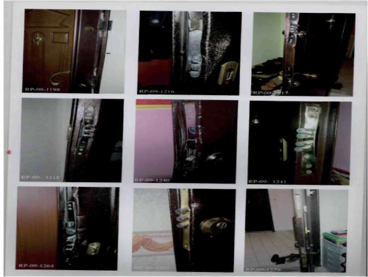
BÖLÜM
HIRSIZLIK SUÇLARI
1. Dil düşürmek suretiyle
Kilitlenmemiş olan kapının dilini röntgen filmi, çelik tel, kredi kartı gibi materyallerle düşürüp kapıyı açmaya denir. Bu olay türü ev içinde birileri varken işlenebilmektedir.İkamet sakinlerinin dikkatsizliğinden kaynaklanan bir suç türüdür.
Örneğin: Ev sakini sabah namazına camiye giderken, sabah işe giderken nasıl olsa evde biri var diyerek kapıyı çeker çıkar veya evin hanımı Markete veya çocuğu okuldan almaya yada bırakmaya gittiğinde 15-20 dakikaya geri döneceğim nasıl olsa bir şey olmaz diye kapıyı çekip çıkar.
2. Anahtar uyudurmak suretiyle
1. Haksız yere elde bulundurulan bir anahtarla açılması. Sahibinin rızası olmaksızın elde bulundurulan her durumda haksız bir elde bulundurma söz konusudur. Sahibi tarafından kaybedilen, bir yerde unutulan, sahibinden hile ile elde edilen, sahibinden zorla alınan anahtar haksız yere elde bulunduruluyor demektir. Anahtar sahibinin rızası ile elde bulunuyorsa haksız bulundurmadan bahsedilemez ve bu hal bent kapsamı dışındadır.
2. Taklit anahtarla yada anahtar yapmak suretiyle açılması. Kilidin gerçek anahtarı dışındaki tüm anahtarlar taklit anahtar sayılır.
Örneğin: Kalıp alma yolları ve bundan kalan izleri iyi bilip tanımak gerekir. (Meselâ; boş anahtar eritilmiş balmumuna sokulup veya kömür 19
BÖLÜM
HIRSIZLIK SUÇLARI
tozları ile siyaha boyanıp ve anahtar deliğe sokularak oynatılır. Balmumu veya kömürle kaplama üzerinde pimlerin ve kanalların izleri kalır.
Bundan sonra eye ile istenen şekil bu boş anahtara verilerek kilit açılır.
Bu gibi hallerde anahtar deliğinde balmumu veya baş ka madde izleri kalır. Kilitleri açmakta kullanılan aletler de izler bırakırlar. Anahtarın ula
şabildiği yerler parlak bir görünüm alır. Diğer yerlerde yağlı bir görünüm vardır. Kilit üzerinde oynama sonucu mutlak şekilde karakteris tik izler bulunur.
3. Diğer bir aletle açılması. Maymuncuk, tel, bıçak, çakı, çengel, tornavida gibi araçlar anahtar fonksiyonu görerek 17 kilidi açtıklarında bu kapsamdadır. Yani, taklit anahtar veya sair aletlerin kilidi açmak için kullanılmış olması gerekir, çalınacak şeyleri yerinden sökmek için alet kullanılması bu bent kapsamında değildir.
“Taklit anahtar”, kilidi haksız yere açmak için alınmış veya başka kilitlere ait olup da değiştirilmiş anahtardır. Bentteki “diğer aletler” deyimi bir kilidin kırmadan açılmasına yarayan, örneğin tel, maymuncuk, çivi, bıçak gibi her türlü aracı içerir.
Örneğin: Kapısı açık kamyondan içeri girerek tornavida ile teybin ve hoparlörlerin çalınması bu bendi ihlal sayılmaz. Kapının üzerinde unutulan anahtarın çevrilerek kapının açılması suretiyle işlenen suçlar bu bent kapsamında sayılamaz.
3. Kilit göbeği kırmak suretiyle
Pek çok çelik ve ahşap kapıda artık iki tane kilit vardır. Altta Yale tabir edilen ahşap kapılarda normal, çelik kapılarda bilyeli olarak bilinen yassı anahtarlı göbekler kullanılır. Üstte fiam (çivi) anahtarlı kilit kullanılır. Fiam kilitlerin ve anahtarların tutma yerindeki tırtırlı yer anahtarı takarken ve çıkarırken mutlaka yukarı doğru olmak zorundadır. Aksi hallerde zaten girmez ve çıkmaz.
Eğer anahtar diğer pozisyonlarda girip çıkıyorsa anahtarda ve göbek pimlerinde aşınma olmuş demektir.


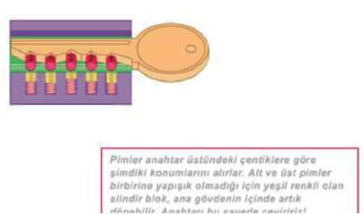
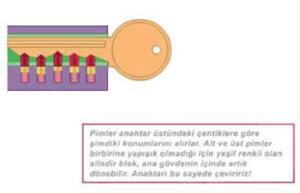

BÖLÜM
HIRSIZLIK SUÇLARI
Kapının açılması için kilit sisteminde örnek resimlerde de açıklanan şifre sisteminin buluduğu bölümü bertaraf etmek gerekmektedir. Buna bulunan çözüm ise şifreli bölümün kırılması şeklinde olmuştur.
Klasik bir kapı kilidinin görünüşü
Soldaki şemada görülen Yale tipi kilitde, hareketli bir silindir vardır (Yeşil olan kısım). Silindir içinde düşey doğrultuda, aynı hizada alt pim (sarı renkli), üst pim(kırmızı renkli) ve yay bulunur. Alt ve üst pimler birbirinden bağımsızdır.
Birbirlerine yapışık değillerdir.
Doğru anahtarı kilide soktuğunuzda, anahtarın üstündeki çentikler vasıtasıyla, yayların ittiği pimler aşağı yukarı hareket ederler. Anahtar kilide tamamen girdiğinde ise, alt ve üst pimlerin birleşim noktaları aynı hizadadır.
Klasik bir kilidin kesiti ve çalışma prensibi Bu durumda silindir blok ana gövde içerisinde rahatlıkla dönebilir. Yanlış bir anahtar kilide tatbik edildiği zaman, silindir üzerindeki çubuklar, silin-21
BÖLÜM
HIRSIZLIK SUÇLARI
dir çevresinin içinde veya dışında kalır ve silindir dönme hareketi yapamaz.
Çünkü çubukların uzunlukları, kendi anahtarlarına göre ayarlanmıştır. Kendi anahtarları tatbik edilince çubuklar silindirin çevresi ile aynı hizaya gelirler ve silindir döner. Böylece kilit açılmış olur.
Şifreli kilit sistemi maymuncuk gibi herhangi bir aletle açılamayacağı için yapılması gereken şey şifre pimlerini aşmaktır. Bunun da yolu şifre kısmının ortada bulunan mıknatıslı parçaya kadar kırılıp ortadan kaldırılmasıdir.
Kapı üzerinde bulunan her iki tür kilidin açılabilmesi için aşağıda resimde görülen aletlere ihtiyaç vardır.
1- Kurbağacık olarak tabir edilen Ayarlanabilir İngiliz Anahtarı 2- Barel koruma aynasını monte etmek için kullanılan yıldız vidaları sökmekte kullanılan yıldız tornavida.
3- Barel koruma aynasını monte etmek için eğer düz vida kullanılmışsa vidayı sökmek için ve barel kırıldıktan sonra barel ortasında bulunan mıknatıslı parçayı döndürmede kullanılan düz tornavida 4- Fiam anahtar denilen çivili kilitleri açmada kullanılan ucu özel olarak sivriltilmiş alyen anahtarı. Yıldız tornavidanın ucunun Fiam kilide girecek şekilde sivriltilmesi de aynı işlevi görür.
Örnek : Kapı kilidi kırmak suretiyle hırsızlık olayını gerçekliştirmek için yukarıdaki malzemeleri tedarik eden şahıs rastgele bir apartmana girer. Gömme kilit olmayan yada barel aynası kaynak yapılmamış bir kapıdan evin içini dinleyerek içeride kimse olup olmadığını anlamaya çalışır. Eğer içeriden ses gelmiyorsa kapının ziline basar. Eğer kapıyı ev sakinlerinden birisi açarsa dikkat çekmemek için rastgele bir isim telaffuz ederek örneğin “Ahmet Bey Bu Dairede Mi Oturuyor ? ” diye sorar ve oradan ayrılır. Kapı zili çaldığı halde kapıyı açan olmazsa suçu icraya başlar. Öncelikle kapı kilidinin önüne muhafaza için ve güzel görünüm sağlasın diyerek yerleştirilmiş olan barel aynasının vidaları cinsine göre elde bulunan düz ya da yıldız tornavidayı kullanarak söker. Daha sonra ayarılı pense ile barelin açakta kalan kısmı tutturulur.
Sağa sola doğru bir iki haraket ettirmeden sonra barel, bareli sabitlemek için ortasında bulunan sabitleme piminin gireceği delikten ikiye ayrılır. Bu esnada barelin ortasında bulunan ve kapıyı açıp kapamada kullanılan mıknatıslı parça kapıda sabit kalan parça üzerinde takılı kalır. Çoğu kilit markasında mıknatıslı parçanın ortası boş ve düz tornavida girecek şekilde olduğundan düz tornavida bu boşluğa sokulur ve anahtar vazifesi görerek kapıyı kendi kilidi ile açarmış gibi açılır.
Üst kilitlerde kullanılan Fiam (çivili kilit) kilitler çok hassas bir yapıya sahip olduklarından içine sert bir şekilde sokulan (T) ANAHTARI (ALYEN); ile içerisindeki şifre sistemini sağlayan pimler hasar görür ve barel blok olarak dönmeye başlar.. Böylece kilit mekanizması çalışır ve kapı açılır. Göbek kırma işleminde amaç şifre sistemini bertaraf etmektir.

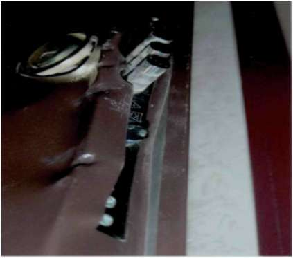
BÖLÜM
HIRSIZLIK SUÇLARI
4. Sert cisimle zorlamak-esnetmek suretiyle Kapı kilidini kırmak suretiyle hırsızlık suçunun günümüzde yoğunlaşması üzerine kilit üreticileri kırılsada açılamayan barel türü, çelik takviyeli bareller, barel koruma aynası kaynak yaptırmak, yada barelin kurbağacık ile tutula-mayacağı gömme kilit takılı kapılar geliştirilmiş; buna karşılık hırsızlık amaçlı şahıslar kapının sert bir cisim ile esnetilerek kilitlere dokunmadan kasa ile kapı kısmı arasına sokulan uzun tornavidalar yardımıyla kapı eğilerek diller dil yuvalarından attırılarak kapı açılmaktadır. Bu tür hırsızlıklar genellikle bu tür hırsızlık yapan grupların karakteristik eylemi olarak göz önüne çıkmaktadır. 18’lik izeltaş tornavida olarak tabir edilen yaklaşık 30 cm uzunluğundaki çelik kalitesi yüksek tornavidalar esnetme işinde çok etkili olduğundan grup tarafından özellikle tercih edilmektedir.
B) PENCEREDEN-BALKONDAN
Pencereden yada balkon kapısından girmek, açıkta bırakılan kapı ve pencerenin kolay ulaşılabilir olması nedeni ile binaya tırmanmak suretiyle icra edilen hırsızlık türüdür. Bu şekilde işlenmiş olaylarda evden yükte hafif, pahada ağır olan eşyalar tercih edilir. Eğer kapı üzerinde anahtar varsa büyük eşyaları da alıp giderler.
Pencereler, pencere camları kırılmak, elmasla kesilmek suretiyle zorlanabilir yahut tespit mandalına yakın bir yerden mat kapla çerçeveye açılan bir delikten içeriye sokulacak bir el aleti ile tespit mandalı tutularak açılır.
C) DİĞER (HAVALANDIRMA BOŞLUĞU, ÇATIDAN VB) Yukarıda açıklanan giriş yöntemleri dışında havalandırma boşluğuna bakan pençerelerden yada çatıdan sallanarak icra edilebilen tasnif dışı giriş
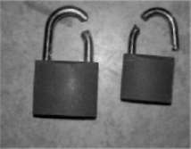
BÖLÜM
HIRSIZLIK SUÇLARI
yöntemlerini ifade eder. Hane halkının tanıdığı süsü vererek girmek, düğün, nişan, cenaze gibi tören ve eğlencelerin olduğu kalabalık ikametlere girmek, 1.1.2. İŞYERİNDEN HIRSIZLIK
İş yerleri içerisinde bulundurdukları nakit para, kolayca paraya çevrilebilecek kıymetli eşya bulundurması sebebiyle her zaman hırsızların ilgisini çekmektedir. Bu sebeple işletme sahipleri daha fazla güvenlik tedbirleri almaktadır. Bunu aşmak için hırsızların daha iyi bir plan yapması ve organize olması gerekir.
İşyeri hırsızlıklarında iş yerlerinin niteliğide önemlidir. Hırsızlar genelikle eczahane, kuyumcu, elektronik eşya mağazaları ve döviz bürosu gibi işyerlerine yönelirken, iş hanları ve sanayi bölgeleride, eğer yeterli güvenlik tedbirleri alınmamış ise hırsızlar için kolay hedef haline gelmişlerdir.
İş yerinden hırsızlık yapanlar tek kişi olabileceği gibi organize bir grupda olabilir. Gru bun sayısı yapılacak işin cinsine, çalınması tasarlanan ticari eşyanın miktarına bağlı olarak değişebilir.
A) KİLİT KIRMAK
Hırsızlar bu metotla hırsızlık yaparken titiz dav ranmaya gerek görmez. Giriş
kapısı zorlanarak girilir ve kucakla taşınabilecek kadar eş ya yüklenilir, beklemekte olan harekete hazır araca binilerek suç yeri terk edilir. Genellikle bu tür hırsızlıklar için zemin katlar tercih edilir.
Bu kişilerin kullanacakları aletler kilit tertibatını kırmak için gerekli aletler olabilir. Bunlar manivela, demir kesme makası, keski olabilir.
B) DUVAR DELMEK- TÜNEL KAZMAK SURETİYLE
Hırsızlar İşyerine yan duvar veya tavandan giriş yapacaklarsa, buraları delmeye elverişli alet ler kullanacaklardır. Bu açıklık hem girişe hem de eşyaları buradan çıkarmaya elverişli olur.
C) KAPI VEYA VİTRİN CAMI KIRMAK
Bu tür hırsızlık olayları genellikle güvenlik siteminin az olduğu ve belirli saatlerden sonra insanların bulunmadığı yerlerde gerçekleşir. Hırsızlık yapmak amacıyla bir araç ile önceden seçtikleri vitrin önüne yaklaşırlar veya aracı önceden seçilen iş yerinin bu lunduğu sokak köşesinde içinde şoförü ile bekletirler. Seçilen iş yerinin önüne geldiklerinde ellerindeki bir gazete kâğıdına sarılı taş veya tuğlayı vitrin camına fırlatmak suretiyle camı kırarlar ve ellerinin uzanabildiği kıymetli şeyleri toparlayarak beklemekte olan araca doğru koşup binerek olay yerini terk ederler. Tek başlarına bu tür hırsızlık yapanlar daha ziyade kış mevsiminde sa bah erken saatleri seçerler.
Ç) AÇIKTAN-KALDIRIMCILIK-OYALAMAK SURETİYLE HIRSIZLIK
İşyerinin açık olduğu faaliyetine devam ettiği sırda işyeri çalışanlarının dikkatsizliğinden yararlanarak yada çalışanı dikkatini farklı yöne çekerek kıymetli 24
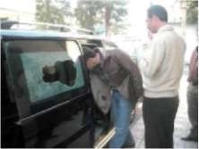
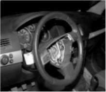

BÖLÜM
HIRSIZLIK SUÇLARI
taşınması kolay eşyanın çalınmasıdır. Bu hırsızlık gerçekleşirken iki veya daha fazla kişi olması gerekir.
D) DİĞER (ÖNCEDEN GİZLENMEK)
Suçu gerçekleştirmek isteyen şahıs işyerine veya büyük işyerlerinin bulunduğu işhanlarının kapanma saatine yakın bir vakitte bina içerisinde tavan arası, yanğın merdiveni, daha önceden kiralanmış dükkan gibi uygun bir yere gizlenir. Bu yöntemle hırsızlık yapan şahıslar genelde aynı han içerisinde daha önceden tespit edilen birden çok işyerinde kasa hırsızlığı olayını gerçekleştirir-ler. Suç ortakları bir araç ile gelirler, çaldıkları eşyaları bekleyen araca yüklenir ve olay yeri terk edilir.
1.1.3. OTODAN HIRSIZLIK
Otolardan genellikle; jant, stepne, akü, yakıt, teyp, hava yastığı gibi oto parçaları ile çanta, cüzdan, dizüstü bilgisayar, cep telefonu gibi araçlarda bırakılan yada unutulan şahsi eşyalar da çalınabilmektedir. Calınan eşyalar daha önceden anlaşmış oldukları ikinci el eşya ve yedek parça satan yerlerde elden çıkarılmaktadır. Değerli eşyalarını görünür şekilde otolarında bırakan veya unutan şahıslar hırsızlara davetiye çıkarmaktadır.
Bu tür hırsızlıklar; cam kırmak, kapı ve bagajın açılması suretiyle, araç dı
şında bulunan akü, stepne, akaryakıt gibi eşyaların çalınması ve diğer yöntemlerle gerçekleştirilebilir.
A) CAM KIRMAK SURETİYLE
Bu yöntem; oto camının buji, taş ve benzeri sert cisimlerle kırılarak oto içerisine girilmesi ile gereçekleştirimektedir.
B) KAPININ VE BAGAJIN AÇILARAK GİRİLMESİ
Oto sahipleri aracını park edip kumanda ile araç kapılarını kapatması esnasında şüpheliler tarafından sinyal karıştırıcı veya yakalayıcı cihazı kullanarak otonun kapısının kilitlenmesini engellenerek gerçekleştirilen, kapının spartula, pinpon topu gibi malzemeler kullanılarak yada anahtar uyudurula-rak açılması yöntemiyle gerçekleştirilen hırsızlık.
C) STEPNE, AKÜ, AKARYAKIT HIRSIZLIĞI
Bu yöntem park halinde bulunan araç içerisine girilmeden aracın dışarısında bulunan akü, stepne veya aracın deposunda bulunan akaryakıtın hortum aracılığıyla çekilmesi suretiyle gerçekleştirilmektedir.
Ç) DİĞER
Oyalama, kazaya sebebiyet verme, arkadan çarpma, oto lastiğine zarar verme gibi yöntemlerle oto sürücüsünün dikkatinin dağıtılarak oto içerisinde taşınan kıymetli eşyanın çalınması şeklinde gerçekleştirilen hırsızlık türleridir.
BÖLÜM
HIRSIZLIK SUÇLARI
Örnek: Banka, döviz bürosu ve kuyumculardan yüklü miktarda para alarak şahsi otosuna binerek para ya da değerli eşyalarını koltuk üstüne veya torpido gözüne koyarak seyir haline geçen otoların cadde, sokak veya trafik ışıklarında yavaş seyrettiği sırada kimliği meçhul şahısların aracın camına veya kaporta aksamına sert bir cisim veya taş atmak suretiyle sürücünün dikkatini o yöne kanalize ederek aracın durdurulması ile birlikte aracı durduran şahsın şoförü oyaladığı sırada diğer şahsın aracın kapısını açarak araç içerisinde bulunan değerli eşya veya parayı alarak uzaklaşması olayı da son zamanlarda sıklıkla görülen hırsızlık türlerinden birisidir. Şahısların özellikle takipli ve en az 2-3
kişi ile çalıştıkları bilinmektedir.
1.1.4. ORTAK KULLANIM ALANLARINDAN HIRSIZLIK
İbadethane, banka ve ATM cihazları, kamu kurum ve kuruluşları, toplu taşıma araçları gibi insanların ortak kullandıkları yerlerde meydana gelen hırsızlık çeşitlerini ifade eder.
A) İbadethanelerden Hırsızlık
İbadet hane olarak kullanılan ve muhafaza altına alınmış yerlerde bulunan tarihi eser, yardım kutusu, ses sitemi gibi kıymetli eşyaların çalınması ceza kanununda ağırlaştırıcı sebep sayıldığı gibi işleniş tarzı ve yöntemi itibariyle karekteristik özellikler taşıdığından ayrı bir grup olarak tasnif edilmiştir. Burada çalınan eşya ibadethaneye ait olabileceği gibi burayı kullanan şahılara da ait olabilir.
B) Banka ve ATM Cihazlarından Hırsızlık
Banka ve ATM cihazları içerisinde çok miktarda nakit para ve kıymetli eşya bulundurduğundan devamlı hırsızların gözdesi olmuştur. Bu sebeple korunaklı ve güvenlik önlemleri üst düzeydedir. Hırsızlar suçu gerçekleştirebilmesi için bankalara genellikle, duvar delmek, tünel kazmak gibi yöntemlerle girmektedir. ATM’ler ise oksijen kaynağı kullanılarak ya da çekiciyle taşınmak suretiyle hırsızlık suçuna konu olmaktadır. Banka ve ATM hırsızlıkları genellikle maaş
zamanlarında, hafta sonlarında paranın çok olduğu ve gece kullanımın az olduğu saatlerde işlenmektedir.
C) KAMU KURUM VE KURULUŞLANIRDAN HIRSIZLIK
Hastane, okul, postane, muhtarlık gibi kamu kurum ve kuruluşları içerisinde bulunan kıymetli malzemeler itibariyle hırsızlık suçuna konu olmaktadır.
Kamu kurum ve kuruluşlarından hırsızlık suçlarını meydana geldiği tarih ve saatlere göre de tasnif etmek mümkündür. Genelde kurum malına yönelik girişimler mesai satleri sonrası kurumun kapalı olduğu zamanda gerçekleştirilmekte iken burayı kullanan şahıslara yönelik hırsızlık eylemleri işyerinin faaliyeti esnasında olmaktadır. Giriş ve işleniş yöntemleri itibariyle ikametten ve işyerinden hırsızlıklara benzemektedir.
BÖLÜM
HIRSIZLIK SUÇLARI
Ç) TOPLU TAŞIMA ARAÇLARI KALKIŞ VE İNTİKAL YERLERİ
TCK’nın düzenlenmesinde toplu taşıma araçlarını kullanan şahıslar ve adet itibariyle kamunun istifadesine sunulmuş taşımacılık sektörünün kullandığı binalarda yapılan hırsızlıklar ağırlaştırıcı sebep sayılmıştır. Burada sıkça kar-şılaştıralan binalardan hırsızlıktan ziyade kullanan şahıslara yönelik hırsızlık gerçekleşmektedir. Detayı şahıstan hırsızlık bölümünde açıklanaçaktır.
1.2. ŞAHISTAN HIRSIZLIK
Hırsızlık suçu şahsa ait malı bulunduğu ev işyeri gibi korunaklı yerlerden olabileceği gibi şahsın üzerinde bulunan eşyaya yönelikde olabilir. İşleniş yöntemlerine göre çeşitlilik arz eden bu tür suçlar faillerin eylem karekteristliği bakımından standartlaşmıştır. Bir yöntemin benimseyen fail başka bir yöntemi tercih etmemektedir.
1.2.1. Kap-kaç
Elde taşınan çanta ve paketlerin alınarak kaçılması olayıdır. Kapkaççılık türü hırsızlıklar, özellikle son dönemde oldukça sık karşımıza çıkmaktadır.
Gün geçmiyor ki, yazılı ve görsel basında kapkaç olayları ile ilgili bir haber gözümüze çarpmasın. Kapkaççı hırsızlar yaya, motosikletli veya arabaya binmiş
olabilirler. Yaya olanları genellikle tek başına yürüyen bayanların çantalarını gözlerine kestirirler. Arkanızdan yaklaşarak çantanızı kaptığı gibi son hız o ortamdan uzaklaşırlar. Motosikletli kapkaççılar ise genelde iki kişidir. Birinci hırsız motosikleti kullanırken diğeri kaldırımın kenarında dalgın yürümekte olan kurbanın omzundaki veya elindeki çantayı çeker ve trafik sıkışık bile olsa en dar yerlere girebilen motosikletle hızla oradan uzaklaşırlar. Araba ile yapılan kapkaç olayında ise, kullanılan araba genelde çalıntıdır. Yine iki ya da üç kişi ile yapılır. Bir kişi arabayı kullanırken diğeri pencereden sarkarak, daha önce gözüne kestirdiği avının elinde veya omzundaki çantayı kapar ve yine hızla oradan uzaklaşırlar. Araba ile yapılan bir başka tür kapkaç hırsızlığında ise, genelde bayan sürücülerin kullandığı otomobillere arkadan hafifçe çarpılır.
Bayan çantasını arabada bırakır ve arabasının arka tarafındaki hasara bakmak için kontak anahtarını da arabanın üzerinde bırakarak dışarı çıkar. Bu arada hırsızlardan biri bayanı lafa tutar, diğeri ise bayanın arabasını çalıştırır ve hızla oradan uzaklaşır. Son dönemde sık rastlanılan bir diğer kapkaççılık türü de, tek başına yolculuk yapan bayan sürücülerin arabasının sağ camını kırmak suretiyle çantasını alarak hızla oradan uzaklaşması şeklinde gerçekleşmektedir.
1.2.2. Yankesicilik
Özel beceri ile bir şahsın üzerinde bulunan malının aşırılmasıdır. Vayba-bamcılık, muslukçuluk, keskincilik, yankesicilik, tırnakçılık, tantanacılık, silkeleme, pislikçilik gibi işleniş yöntemine göre polis ve suçlu dilinde tanımlamaları mevcuttur.
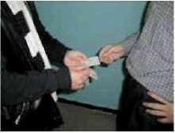
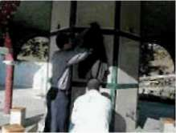
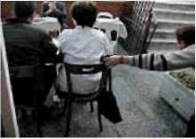
1.2.3. GÜVENİ KÖTÜYE KULLANMA SURETİYLE
Başkasına ait olup da, belirli bir şekilde kullanmak üzere zilyedliği (kullanım hakkı) kendisine devredilmiş olan mal üzerinde, kendisinin veya başkasının yararına olarak, zilyedliğin devri amacı dışında tasarrufta bulunulmasıdır.
1.3. AÇIKTAN HIRSIZLIK
Bina yada eklentilerinde kilit altına alınmamış taşınır mallar üzerinde yapılan hırsızlık türüdür.Doğal afetin meydana getirdiği yıkım sonrasında açıkta kalan eşyalar üzerinde de gerçekleşebilmektedir.
1.4. BİLİŞİM YÖNTEMİYLE HIRSIZLIK
Bilişim sistemi; verileri toplayıp yerleştirdikten sonra bunları otomatik işlemlere tabi tutma olanağını veren manyetik sistemlerdir Bilişim yöntemiyle hırsızlık başkasına ait telefon, şifreli yayın, kişisel bilgi gibi verilerin elde edilerek kendi namına fayda saglanmasıdır. Yada başka bir deyişle internet ya da intranet gibi sanal alanlardan oluşan bilişim dünyasında maddi değeri olan bir şeyin sahibinin rızası dışında alınması eylemi bilişim hırsızlığı olarak tanımlanabilir. Bilişim suçuna örnek olarak sahte kredi kartı ile bankamatikten para çekmeyi verebiliriz. Burada iki suç vardır birisi sahte kart yapmak diğeri de nitelikli hırsızlıktır.
1.5. OTO HIRSIZLIĞI
Oto hırsızlığının muhtelif tiplerine katılan kişilerin genellikle gerçekten mahir kimseler olduğu görülmüştür. Bunları genel bir sınıflandırma içinde şöyle sıralamak mümkündür.
(a) Otoları çalarak satan ve geçimini bu suretle sağlayan profesyonel hırsızlar, (b) Kullanım amacıyla oto çalan gençler,
(c) Başka suç işlemek için oto çalan suçlular, (d) Evlerinden hayli uzakta, bir nakil aracı olmaksızın evlerine ulaşamaya-cak durumda kalanların bir defaya mahsus ola rak yaptıkları çalma işi, (e) Sarhoşluk etkisiyle bu işe yeltenenler.
İşleniş Yöntemlerine Göre Oto Hırsızlığı Düz kontak yapmak,
Anahtar uydurmak,
Anahtar üzerindeyken çalmak,
Anahtarı çalmak,
Çekiciyle götürmek,
Trafik kazası süsü vermek gibi yöntemlerle işlenmektedir.
BÖLÜM
HIRSIZLIK SUÇLARI
Kural olarak oto hırsızları çok iyi sürücüdür. Bu tecrü be onlara her tip aracı kolaylıkla kullanma imkânı verir. Ayrı ca yine bu maharet sayesinde araçları düz kontakla rahatlıkla çalıştırırlar.
Genellikle oto hırsızlarının araçları çalmak için faydalandıkları belli noktalar vardır. Bunlar şehrin kalabalık kesimlerini se çerler. Sinemalar, tiyatrolar, parklar, eğlence yerleri gibi. Buralarda araçlar çok sık park yaptıklarından hırsızlar rahat çalışma imkânı bulurlar.
Oto çalınırken kelebek camını kırmak yahut zorlayarak açıp kapı iç düğmelerine ulaşmak şart değildir. Genellikle kapıların zor lanması da maksadı sağlar. Levye gibi kullanılan sert bir madde ile kapı kilitlerinin tazyiki ve kırılarak açılması sağlanır. Şayet kontak kapalı ise akü kutup başlarına bağlanan kablo ile ve direksiyon kilidini kırarak ardından direksiyon alt tabla kısmı sökülmek suretiyle düz kontak yapılır.
Bu sistemle çalıştırılması mümkün olmayan araçlarda yük sek gerilim bobini kullanılır. Bir kablo distribütörden çıkarılır ve bujilere bir irtibat yapılır. Kontak kapalı dahi olsa araç ça lışır. Bu yöntemle usta bir tamircinin bir aracı 45
saniyede çalıştırabildiği saptanmıştır.
Oto hırsızlığının daha pek çok şekilleri vardır. Otopark ve oto yıkama gibi yerlerde çalışanlardan yardım alınarak anahtarlar temin edilebilir. Böyle ce kopya anahtar yaptırılır. Sonradan bu anahtarlar yardımı ile araç ça lınır.
Oto hırsızlığı soruşturmasında, soruşturmacı mutlaka motor ve şase numarasını temin etmelidir. Hırsızlar bu numaraları kazı yabilirler hatta yeni numara dahi basabilirler. Ancak teknik inceleme ile bu tespit edilebilir.
Bazen otonun rengi değiştirilir ve bazı parçalar da sökülerek yerine başkaları takılabilir. (Far, dikiz aynası, tekerlek kapakları, Ön panjurlar, vs. gibi) Soruşturmacı çalınan otunun her halini tespit etmelidir, işletme ruhsatı, tip, model, yıl, kapı adedi, varsa özellikleri, tamir görmüşse nerelerde gördüğü noksanlıkları ve benzeri en ince tefer ruat gibi. Bunları daha derli toplu olarak şöyle sıralamamız müm kündür.
(1) Gövde yapısı, işaretlerin yeri, (2) Motor ve şase Numarası,
(3) Tamirat veya tadilât,
(4) Harici hasar ve bereler,
(5) Yapılan tadilât (Radyo, kalorifer, akü, lastikler) (6) Tekerlekler, (lastik ebatlar, cinsi, durumu) Oto hırsızları genellikle yalnız, bazen ikili veya üçlü guruplar halinde faaliyet gösterirler. Her yaştan olurlar.
Tek başına çalışan oto hırsızları her fırsatta oto çalarlar. Gruplar halinde çalışanlar daha sistemli iş görürler.
Çalınan araçların elden çıkarılma usulleri de değişiktir. Sa tılık ilânları vermek suretiyle satış yapabilirler, (burada bir oyun hazırlanır, ilân belli model bir araba için yapılır, gelenlere deği şik modeldeki çalıntı araba gösterilir). Bu durum da da ilânın hatalı basılmış olduğu söylenir.
Oto hırsızlığında zor olan husus aracın çalınmasında değil kayıt ve tescil için doküman ve evrak teminindedir. Bu gerekli bel geler muhtelif yollardan sağlanır. Sahte mühür, vs. ile tamamen sahte evrak tanzim edilebilir.
Bazen profesyoneller, piyasada en çok tutulan model ve mar kadaki arabaları çalarlar. (Kolay pazar temini-satış kolaylığı ne deniyle).
1.5.1. İşlenme Tarih ve Saatine Göre Oto Hısızlığı Oto hırsızlığı suçunu meydana geldiği tarih ve saate göre de tasnif etmek mümkündür. (mevsimsel değişiklikler, gece ve gündüz saatleri gibi) 1.5.2. İşleniş Amacına Göre Oto Hırsızlığı Oto hırsızlığı suçu genellikle; siyasi, eğlenmek, parçalamak, yurt dışına çıkarmak, başka bir suçta kullanmak, change yapmak, menfaat temin etmek, sigorta dolandırıcılığı yapmak gibi amaçlarla işlenmektedir.
1.6. KASA HIRSIZLIĞI
İş yeri hırsızlıklarında çoğunlukla hedef iş yerlerinde bulunan kasalardır.
Bu nedenle iş yeri hırsızlıklarının sınıflandırılmasında kasa hırsızlığının ayrı bir başlık olarak ele alınmasında fayda vardır. Kasa hırsızlıkları genellikle, anahtar deliklerini genişletmek, özel yapılmış telleri anahtar deliklerine sokmak suretiyle açmak, arka puntolarını sökmek, oksijen kaynağı ve spiralle kesmek, aletle kırmak ve taşımak gibi yöntemlerle işlenmektedir.
Ana hatları ile kasa hırsızlığı suçlarını inceleyelim.
(1) Yakalanma ihtimaline karşı kullanılacak alet-edevat ön ceden uygun bir yerde depolanır. Bu aynı bina içinde özel bir yer olabileceği gibi o yer yakınında başka bir yer de olabilir. Ancak son dönemde kasa hırsızları alet ve edevatları beraberlerinde taşımaktadırlar.
(2) Bu alet ve edevatın suç yerine getirilmesinde değişik metotlar uygulanır.
Bir çanta içinde taşınır, bunlar parçalar halinde taşınabilir. Araba bagajında saklanabilir.
(3) Bazen karanlık bastırınca, akşamla şafak arası, binanın tipi ve yapısı, komşu binaların durumu da göz önüne alınarak ka sa açılır.
(4) Bundan sonra ya puntolama (kaynakla noktalama) metodu ile veya asetilen lambası ile ya da nitro-gliserin, dinamit, elektrik mat kapları kullanarak yahut kasayı ters çevirip alt kısma çekiç, keski, balyoz darbeleri ile vurmak suretiyle kilit mekanizmasını devre dışı bırakarak kasayı açmaya çalışırlar.
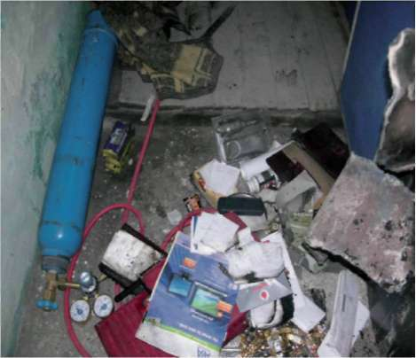
BÖLÜM
HIRSIZLIK SUÇLARI
(5) Modern yapıdaki kasalar puntolamaya karşı emniyet lidirler.
(6) Kasanın şifreli olması halinde, numaratörlere çekiç ve keski kullanmak suretiyle vurularak gevşetilip sonra puntolama ile yerinden kopartılıp kapak açılır.
Mekanizmanın nasıl işlediğini an layabilmek için de kasalar hakkında bilgi sahibi olmak gerekecek tir.
Günümüzde genellikle kasalar ateşe dayanıklı ve em niyetli olmak üzere iki temel gurupta imal edilmektedirler.
Ateşe Dayanıklı Kasalar: Bunlar genellikle iki çelik lev ha, arasına yangına dayanıklı tecrit maddeleri konarak imal edil mektedirler. Bu tecrit maddeleri genellikle alçı ve silisli maddeler dir. İşte bu tecrit maddeleri suçluyu suça bağlamada önem arz eder. Suçlunun üst başında, ayakkabılarında hatta aletlerinde bu tecrit maddeleri partikülleri bulunur. Genellikle bu kasalarda çifte kilit ve emniyet kilitleri bulunur. Ancak bu tip kasaları usta hırsızlar kısa zamanda kolaylıkla açar lar.
Emniyetli Kasalar: Bunlar daha ziyade daha kalın çelik bloklarla inşa edilir ve hırsızlığa karşı hayli uzun zaman dayanıklılık gösterebilirler. Kalın gövde yapısı nedeniyle matkaba veya kes melere karşı dayanıklıdır. Ancak ateşle yapılacak çalışmalara veya darbelere karşı pek emniyetli sayılmazlar.
Bunların dışında daha takviyeli olarak inşa edilmiş özel emniyet tipli kasa daire veya mahzenlerinde kullanılan tipler vardır. Bun lar da asetilen tüpleri ile yapılan çalışmalara karşı hayli direnirler. Ama yine de açılabilirler.
Hem yangına mukavim hem de emniyetli kasalar da imal edil miştir. Beton duvarlara gömülü kasalara kapaktan ziyade beton du varlardan ulaşmak tercih edilir.
Yeterince zaman, elverişli alet ve edevatla kasaların açılabileceği ihtimali daima göz önünde bulundurulur.
Delme veya Kesme Yöntemi
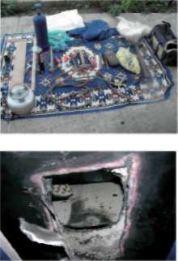

1.6.1. KASA AÇMA YÖNTEMLERİ
Kalem uçlu elekt rikli matkapla yukarı aşağı hareket edilerek kapakta manivela sokacak kadar bir kesik oluşturulur. Levye ile bastırılarak kapak açılır.
Veya kesme işlemi ön çelik levha çıkarılıncaya kadar devam eder.
A) Puntolama Yöntemi
Buna zım balama Yöntemi de denir. Kadran büyük bir el çekici ile darbe-lenir ve yerinden koparılır. Mihvere merkezi zımba ile darbe vuru larak içeriye itilir, küçük soket kırılır ve dolayısı ile kilidi serbest bırakır.
B) Ateşle Çalışma (Eritme) Yöntemi
Burada failin ase tilen tüpü ve lambası ile çalışmayı bilmesi gerekir. Lamba içinde hava ile asetilen gazının oranının yüksek ısı oluşturmak üzere ayarlanması gerektiğini bilmesi gerekir. Alev tek noktaya yoğunlaştırılarak eritme yapılır. Oksijen tüpü, gaz ve yeter uzun lukta hortuma ihtiyaç vardır.
C) Kasanın Komple Çalınması Yöntemi
Suçlular daha emniyetli ve elverişli şartlar altında çalışabilmek için kasayı kendi saklanma veya iş yapma yerlerine naklederler. Boş kasa nehir, göl, denize ormanlık alana atılabilir.
D) Patlatma Yöntemi
Bu yöntem uygulanırken dinamit kullanılır. Patlayıcı maddeyi koymak için matkapla bir kanal açılabilir. Dinamitle bera ber kapsül ve fitil kullanmak gerekir. Kablo ucu bir bataryaya veya şehir cereyanına bağlanabilir. Bütün yarık veya çatlaklar sabun gibi maddelerle kapatılır, patlama sesini azaltmak için pamuklu maddeler, sargılar kul lanılır. Bunlar suyla ıslatılarak kasa çevresine sarılır. Pencereler hem patlamanın etkisi ile camların kırılmasını ve parçalanma sonucu fazla ses çıkmasını önlemek hem de patlama gazlarının dışarıya atılmasını sağlamak için açılır. Aksi takdirde patlama gazlarının basıncı ciddi problemler yaratabilir. Bu yöntem genellikle fazla ses çıkardığı için yerleşim yerlerine yakın boş arazilerde, ormanlık alan kenarlarında ve kullanılmayan metruk binalarda yapılır.
E) Kırma Yöntemi
Kasa ya baş aşağı devrilir ya da yatırılarak balyozla vurmak suretiyle kırılarak açılır. Bu yöntemi genellikle acemiler kullanır.
Ayrıca son zamanlarda görülen diğer bir kasa hırsızlığı türü de, işyeri duvarına yaslı kasayı daha emniyetsiz ve tedbirsizce korunan yan komşu dükkâna girmek suretiyle işyerinin ortak kullandığı duvarın kırılarak veya delinerek yan duvara yaslı kasaya ulaşılarak aynı şekilde duvara dayalı kasanın oksijen kay-32


BÖLÜM
HIRSIZLIK SUÇLARI
nağı marifetiyle kesilerek açılması ve kasanın içinin boşaltılması yöntemidir.
Genellikle bu tür işyerleri kendi işyeri güvenliğini üst seviyede alır ve tehlikenin komşu işyerlerinden gelebileceğini düşünemez. Bu işi yaparken keşif çok önemlidir. Hedef işyerinde bulunan kasanın doluluk oranı, kasanın yaslı olduğu duvara göre konumu, duvarın kalınlığı ve yapısı, komşu işyerinin güvenlik durumu, açılış kapanış saatleri, giriş- çıkış yapılacak yerlerin kilit yapısı vb.
konular önemlidir.
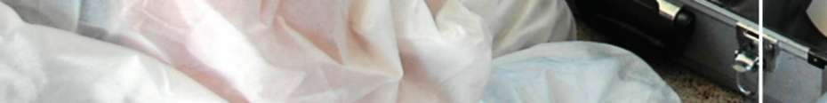
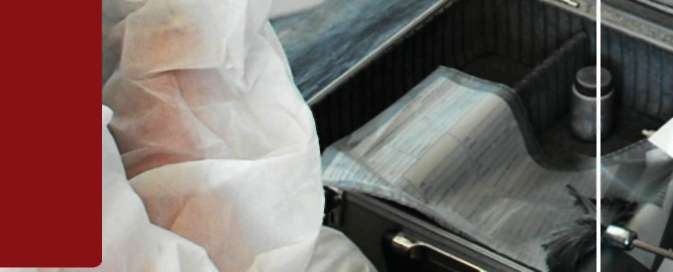
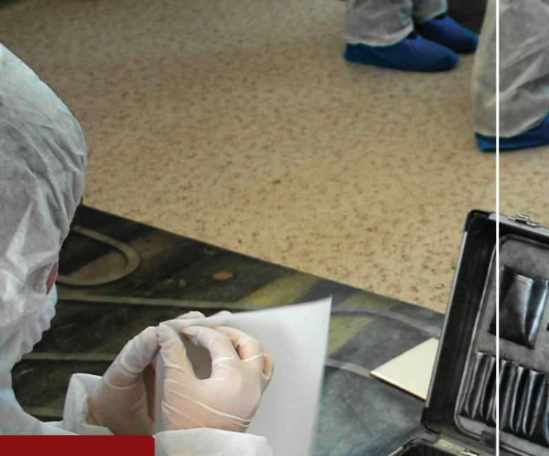
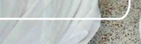
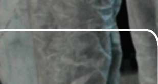

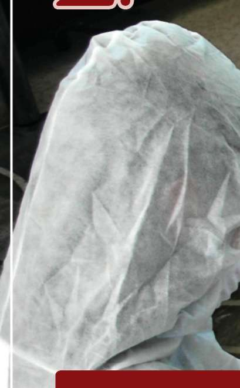
SUÇUNDA OLAY YER İ N İ N İ NCELENMES İ ve SORU Ş TURMA EVRES İ
BÖLÜ M
H I R S I Z L I K S U Ç U N D
CELENMES İ ve SORU Ş TURMA ı
2.1. Suç Soruşturmasında Olay Yeri
İncelemesinin Rolü ve Önemi
2.2. Deliller
2.4. Kimyasal Deliller 2.5. Fiziksel Deliller
2.6. İz Deliller
2.7. Olay Yeri Güvenliği

BÖLÜM
HIRSIZLIK SUÇUNDA OLAY YERİNİN İNCELENMESİ ve SORUŞTURMA EVRESİ
2. BÖLÜM: HIRSIZLIK SUÇUNDA OLAY YERİNİN İNCELENMESİ
ve SORUŞTURMA EVRESİ
HAZIRLIK SORULARI
^ Bir hırsızlık olayı sırasında suçüstü yakalanmış birden fazla şüpheli
®
mevcut Bu durumda ilk dikkat edeceğimiz hususlar neler olmalıdır?
(Şüphelileri ayrı ayrı muhafaza etmek - erkete ya da şöför gibi diğer şahısların civarda olup olmadığını öğrenebileceğimiz soruları arka arkaya ve hızlı bir şekilde sorarak, aldığımız cevapları yorumlamak - şahısların elde olmasına rağmen delileri eksiksiz olay yerinden toparlamak)
^ Müşteki beyanında çalındığı iddia edilen eşyalara dair neler yapılabilir
^ Çalınan eşyalar kayıt altına alınırken olabildiğince detaylı bilgi alınır bu aramada karşılaştırma yapmada faydalı olacağı gibi eşyaların temini sonrasında doğabilecek beyan farklılıklarından doğan ihtilafları ortadan kaldırır Hırsızlık suçunun soruşturması diger suçların soruşturmasına benzemekle birlikte özellikle hırsızlık suçlarında fail ile mağdur arasında temas ve illiyet bağı olmamasından dolayı teşhis, tanıklık gibi hukuki olgulardan tam manasıyla faydalanılamamaktadır. Buda suçun aydınlatılması yolunda farklı metod-ların uygulanmasına ve üretilmesine sebep olmuştur.
Bir fırsat suçu olarak nitelenen hırsızlık suçları kolay başvurulan suçlardır.
Suç işlenmeye başlandığı dönemde edinilen alışkanlıklar daha sonraki suçların işlenmesi sırasında yinelenir. Bu nedenle failin eşyayı elde etmek için kullandığı yöntemleri belirlermeye çalışılmalıdır. İyi bir soruşturmanın aynı zamanda iyi bir önleme tedbiri olduğu asla görmezden gelinmemelidir.
Soruşturmacı olarak mutlaka bir not defteri taşınmalı, olaylara ilişkin düzenli notlar alınmalıdır. Not alırken olay, yer, yöntem, zaman ve kişilere ait bilgiler kronolojik bir sıralamaya tabi tutulmalıdır. Notlar ve istatistiki veriler hafızanın tazelenmesini, meydana gelen benzer olaylar ile kişiler arasında bağlantı kurulmasını sağlayarak ekiplerin yönlendirilmesinde yardımcı olur.
Soruşturma alanında en zor hizmetlerden biri de hırsızlık so ruşturmalarıdır.
Diğer alanlarda olduğu gibi burada da soruşturmacıyı bazı temel görevler beklemektedir.
2.1. SUÇ SORUŞTURMASINDA OLAY YERİ İNCELEMESİNİN ROLÜ
VE ÖNEMİ
Olay, kanunlarda açıkça suç olarak belirtilen fiil ve hareketlerin ortaya çıkmasını, olay yeri de; olayın işleniş tarzının, mağdur ve suç failleri ile ilişkisi-35

SUÇUNDA OLAY YERİNİN İNCELENMESİ VE SORUŞTURMA EVRESİ
nin saptanabildiği bölgeyi ifade eder. Olay yerinde bu ilişkilerin belirlenmesi çalışmalarını kapsayan olay yeri incelemesi, suç soruşturmasının en önemli bölümünü oluşturur.
“Olay yeri incelemesi ile elde edilen en önemli unsur maddi delillerdir. Bu tür deliller şüphelinin aleyhine dilsiz birer tanıktır.
Olay Yeri İncelemesinde amaç;
Meydana gelen bir olayın adli bir suç olup olmadığını tespit etmek, Olayın öngörülen şekil ve şartlarda meydana gelip gelmediğini belirlemek, Olay yeri-fail-mağdur(veya maktul) arasındaki ilişkiyi kuracak maddi suç delillerini bulmaktır,
İşlenen suçun aydınlatılması ve adli mercilerin doğru karar vermesini sağlamak amacıyla olay yerini belgelemek,
Olay bir süreçtir ve bu süreci sadece olayın meydana geldiği yer olarak nitelendirmek doğru değildir. Olay filin işlendiği yerde başlayıp, failin gidebileceği yerleri de içine alan geniş bir alandır. Olay soruşturmasında ve çözümünde fail-mağdur-olay yeri ilişkisinin ortaya çıkarılması önemlidir. Olayın üç unsuru arasındaki ilişkilerin tespit edilmesi gerekmektedir.
FAİL
MAĞDUR
OLAY YERİ
Değişim Prensibi
Fransız asıllı Kriminal Uzman Edmund LOCARD Bir olay sonrası olay yerini terk eden failler ile ilgili olarak “Her Temas Bir İz Bırakır”ve ”Bir ortamı terk eden bir kişinin orada bulunduğuna dair iz bırakmaması, yada üstünde o ortamdan bir şeyler alıp götürmemesi hemen hemen imkansızdır.”diyerek değişim prensibini ortaya koymuştur.
Suç
Devletin hukuk düzeni içinde kendisine yaptırım olarak ceza konulmuş fiillere denir.


BÖLÜM
HIRSIZLIK SUÇUNDA OLAY YERİNİN İNCELENMESİ ve SORUŞTURMA EVRESİ
Olay
Adli yönden ortaya çıkan, oluşan, durum, ilgi çekebilecek nitelikte her türlü hadiseye olay denir. Suç kavramıyla bağdaştırıldığında kanunda açıkça suç olarak belirtilen fiil ve hareketlerin ortaya çıkmasıdır.
Olay Yeri
Suç kastının davranışa dönüştüğü yerde başlayıp, failin kaçış yönüyle devam eden, olayın işleniş tarzını mağdur ve sanıkları ile ilişkinin saptanabilece-ği ve maddi delillerin tespit edilebileceği yere denir.
Olay yerinin sınırlarının iyi tespit edilmesi gerekmektedir. Bazı olaylar kapalı, bazıları da açık alanda işlenebilir. Kapalı yerlerde işlenen olaylarda olay yeri eklentileriyle birlikte tamamen korunarak kapatılmalıdır. Açık alanlar ise, çok geniş bir şekilde koruma altına alınmalıdır.
Olay Yeri Tespit (Belgeleme) Yöntemleri
Bir olayda hukuki süreç, olayın olması ile başlar ve mahkeme tarafından hüküm verilene kadar devam eder. Bu sürecin en önemli bölümü şüphesiz soruşturma safhasıdır. Soruşturma sırasında ise en önemli bölüm, meydana gelen olayın ilk hali ile tespit edilmesidir. Bu sayede kovuşturma safhasında olay yerinin ilk haliyle gözler önüne serilmesi amaçlanmaktadır.
Olay yerlerinin ilk hali ile belgelenmesi için aşağıdaki yöntemler kullanılır.
1. Teknik Görüntüleme (fotoğraf ve kamera çekimi) 2. Kroki
3. Rapor
2.2. DELİLLER
Delilin Tanımı
Bulgu; Olay yeri incelemesi sırasında olay yeri-fail-mağdur ilişkisini ortaya koymak amacıyla olay yerinde elde edilen ve henüz hukuki nitelik kazanmamış her türlü maddi (fiziksel) unsurlardır.
Delil; Bir hukuki sorunu çözmeye, suç fiilini ispata, meydana gelen bir su
çun aydınlatılması ve suç faillerinin tespitine yarayan, hukuka aykırı olarak elde edilmemiş her tür bulguya delil denir. Her delil bir bulgudur ama her bulgu bir delil değildir.
Olay yerinden elde edilen deliller aksi ispat edilene kadar geçerliliklerini korurlar. Hukuk sistemimiz serbest delil sistemini benimsemiştir. Bu açıdan olay yerinde bulunabilecek her şey delil olabilir. Ayrıca, Anayasamız vicdani kanaat sistemini benimsemekle birlikte Hakimler, kanaatlerini kanuna ve hukuka uygun olarak bilimsel verilerle birleştirip ona göre hüküm vermektedirler.
SUÇUNDA OLAY YERİNİN İNCELENMESİ VE SORUŞTURMA EVRESİ
Delillerin Özellikleri
Delillerin özellikleri Anayasa ve Ceza Muhakemesi Kanununda belirtilmiştir.
Toplanan deliller hukuki yolla elde edilmelidir. (Anayasa md:38) Gerçekçi ve mantıklı olmalıdır,
Suç konusunu oluşturan olayı temsil edici olmalıdır (maksada elverişli olmalıdır), Davanın taraflarınca ve yargı makamınca tartışılacağından birliktelik sağlamalı, tarafların özel bilgilerinden ibaret olmamalıdır.
Delillerin suç soruşturmasında Sağladığı Faydaları İşlenmiş bir suçu ispat edebilir ve suçun anahtar unsurunu belirler.
Şüpheli, mağdur ve olay yeri arasındaki ilişkiyi ortaya koyar.
Suça katılan kişilerin kimliğini belirler.
Şüphelinin suçsuzluğunu veya suçluluğunu ortaya koyar.
Mağdurun veya tanıkların ifadesini doğrulayabilir.
Suça katılanların suçtaki kusurluluk derecesinin tespitine yardımcı olur.
Şüpheli şahsın suçunu kabullenmesini ve itiraflarını sağlayabilir.
Görgü tanıkları beyanından daha güvenilirdir.
Suçun işleniş şeklinin tespitine yarar.
Suçun psikolojik karakterlerinin tespitine yarar.
Diğer benzeri olaylarla ilişkilendirilmesini sağlar.
KAYNAĞINA GÖRE DELİL ÇEŞİTLERİ
Delilleri, genel manada, beyan deliller ve maddi deliller olmak üzere iki başlık altında incelemek mümkündür. Meydana gelen bir olay sonrasında maddi delillerin yanı sıra tanıklar, mağdur yada şüphelinin sözlü ifadeleri de alınır. Soruşturma sırasında önemli olan bu ifadeler, maddi suç delilleri ile desteklendiği müddetçe değer kazanır.
1. Beyan Deliller
Olayla ilgili olarak şüpheli, tanık, sanık ve mağdurların vermiş olduğu ifadeleri kapsar 2. Maddi Deliller
Beyanlar dışında kalan, maddi (fiziki) bir yapıya sahip, dokunulabilen, canlı veya cansız herhangi bir nesne ya da ize maddi delil denir. Parmak izi, tabanca, kovan, sigara izmariti, kan lekesi v.b.
Maddi deliller soruşturmada: Olayla alakalı sorulabilecek, KİM-NE-NEREDE-NEZAMAN-NASIL-NİÇİN sorularına cevap verebilir nitelikte olmalıdır. Parmak izi gibi fail yada faillerin kimliklerini tespit etmeye yarayan delillerin yanı sıra çeşitli yüzeylere sıçramış kan lekelerinden olayın meydana gelişi ile ilgili bilgiler elde etmek de mümkündür.


BÖLÜM
HIRSIZLIK SUÇUNDA OLAY YERİNİN İNCELENMESİ ve SORUŞTURMA EVRESİ
2.3. BİYOLOJİK DELİLLER ve DNA
Canlıların vücudundan kopan, düşen veya akan her türlü delile biyolojik delil denir. Biyolojik delillerin incelemesinde temel amaç; DNA ya ulaşmaktır.
DNA (deoksiribo nükleik asit), bir kişinin genetik bilgisinin tamamının yer aldığı temel yapı taşıdır. DNA kanda, spermde, deri hücrelerinde, doku ve organlarda, kasta, beyinde, kemikte, tükürükte, terde, idrarda, tırnakta, dışkıda, saçta kısacası vücudun her yerinde bulunur ve tamamen aynı yapıya sahiptir.
Yer yüzünde, DNA sı tamamen birbirinin aynı olan iki kişi bulunamaz. İs-tisnası tek yumurta ikizleridir. Bu önemli karakteristik özellik, karşılaştırma yapıldığında, o kişinin suç ile alakası olup olmadığını kanıtlayabilir.
Bir kişinin DNA sının özellikleri anne, baba veya çocuklarının DNA sı incelenerek tespit edilebilir. Bu sayede kayıp olan bir kişinin cesedi bulunamadığı veya kanı alınamadığı zaman, akrabalarının kan örnekleri incelenerek DNA profili çıkartılabilir. Bu yöntemle kimliği belirsiz cesetlerin kimliği tespit edilir.
Biyolojik deliller bakteriyel bozulmaya müsait delillerdir. Olay yerinde bulunan birinin teması, öksürmesi, hatalı paketleme gibi kontaminasyona (kirlenme) veya bozulmaya neden olacak diğer hatalar delili değerlendirilemez duruma getirebilir. Biyolojik materyaller hepatit B yada AİDS hastalığına yol açan HİV gibi tehlikeli ve ölüme neden olabilecek virüsler içerebilirler.
Biyolojik Delil Çeşitleri
Kan
Kıl
Tükürük
Ter
Cinsel Akıntı
İdrar ve Gaita.
Doku ve kemik parçaları
Kepek ve deri döküntüleri
Burun akıntısı
Kan
Kan, insan vücudunun toplam ağırlığının % 8’ni oluşturmaktadır. Bir sıvı ortamdan (plazma) ve bu ortam içinde bulunan özelleşmiş hücrelerden uş-muştur. Bu sıvı ortam içinde % 90 oranında su ve geri kalanında proteinler, iyonlar, besinler, hormonlar, gazlar ve atık maddeler bulunur.
Kan örnekleri olay yerinde en çok bulunan ve az miktarlarda dahi (bir toplu iğne başı büyüklüğünde) netice verebilen önemli biyolojik delillerden biridir.
Uygun koşullarda beklemiş ve bozulmamış bir kan lekesi yıllar sonra dahi analizlere netice verebilir, ancak uygun olmayan koşullarda (nem, sıcak, kir, toprak ile temas) kalmış kan örneği bir günde bile bozularak delil özelliğini yitirebilir.
SUÇUNDA OLAY YERİNİN İNCELENMESİ VE SORUŞTURMA EVRESİ
Kan delilleri, olay yerinde, maktul, mağdur ve şüpheli şahısların üzerinde bulunan karşılaştırma kan örnekleri olarak ikiye ayrılırlar.
Kıl
Olay yerlerinde, giysiler üzerinden, fırça veya tarak üzeri, şapka, bone, bere gibi aksesuarların iç yüzeyleri, evde yada işyerinde bulunan eşyaların, araçların koltukları veya paspaslarda, maktulün avuç içerisi veya tırnak araları gibi çeşitli yerlerde bulunur.
Tükürük
Tükürük delilleri; genellikle sigara izmaritleri, kürdan, çiğnenmiş sakız, kullanılmış bardak üzerinde, tecavüz olaylarında mağdur üzerinde, kullanılan maskelerde, ısırık izlerinin bulunduğu yerlerde veya yalın olarak bulunabilir.
Ter
Genellikle giysilerin yaka kısımları, şapka, bere, bone, kar maskesi, eldiven üzerinde bulunurlar, kullanılan maskelerde ve eldivenlerde kirlenmeden dolayı genetik analizlerinden her zaman sağlıklı sonuç alınamaz.
İnsanın bütün hücrelerindeki genetik yapı aynı olduğu yani tükürük ve kıl, meni, kepek ile kandaki genetik yapının da aynı olduğu göz önüne alınarak karşılaştırma için analizlere kıl, tükürük, meni, idrar ve gaita karşılaştırmasi yerine daha sağlıklı sonuç veren kan örneği gönderilmesi uygundur.
Cinsel Akıntı
Cinsel akıntılar, genelde elbiselerde (özellikle iç çamaşırlar), yatak ve çar-şaflarda, olayın gerçekleştiği yer çevresinde ve çöp kutusu içerisindeki peçete, havlu, prezervatiflerde bulunabilir.
Olay yeri öncelikle UV ışıkla taranarak akıntı delillerinin nerede olduğu tespit edilir. Cinsel akıntılara olay yerinde sıvı veya leke halinde rastlamak ta mümkündür.
Kuruduğu zemin üzerinde sarımtırak bir renk ve sertleşme meydana getirir. Bu tip lekeler, cinsel saldırının meydana geldiği yatak, çarşaf, yastık gibi zeminler ile olayın kurbanı ve saldırganına ait giysi ve iç çamaşırları üzerinde titizlikle aranmalıdır.
Ayrıca cinsel saldırının olduğunu ve saldırganın kimliğinin tespitini tayin etmek için olayın kurbanından olayın oluş şekline göre cinsel sıvıları ihmal edilmeden yetkili kurum izni ile ilgili kurum hekimi tarafından alınmalıdır.
Alınan deliller kısa zamanda serin bir ortamda (+4 C) laboratuvara gönderilmelidir.
İdrar ve Gaita (Dışkı)
Karşılaşılan bazı olaylarda fail, evin eklentilerini kullanmış yada tuvalet ihtiyacını tuvalet dışında gidermiş olabilir. Bu tür olaylarda karşılaşılan dışkı 40


BÖLÜM
HIRSIZLIK SUÇUNDA OLAY YERİNİN İNCELENMESİ ve SORUŞTURMA EVRESİ
örneklerinden bir çay kaşığı kadar alınması yeterlidir. Ancak bu deliller çok kısa sürede kokuşma ve bozulmaya uğradığından analizlere genellikle cevap vermemektedir.
Doku ve Kemik Parçaları
Şüpheli doku, kemik yada dişler eldiven kullanılarak veya temiz bir pens yardımı ile toplanarak ayrı ayrı paketlenip serin bir ortamda en kısa sürede laboratuvarlara sevki sağlanmalıdır.
Deri Döküntüsü ve Kepek
Yatak, giysiler, şapka, bere, bone, kar maskesi üzerinde yada herhangi bir yerde bulunan deri ve kepek döküntüsü, temiz bir zarfa el değmeden temiz bir fırça yada kağıt yardımıyla alınarak laboratuvara gönderilir.
Burun Akıntıları
Bir mendil veya peçete üzerinde yada giysiler üzerinde bulunabilir. Tükürük te olduğu gibi genetik analizlerle kesin netice almak mümkündür. Olay yerinden toplanması da tükürük örneklerinin toplanmasıyla aynı şekildedir.
Biyolojil Delillerin Elde Edileceği Yerler Delil Bulunması Muhtemel Yer
Kürdan uç kısım
Sigara izmariti filtre
Pul yada zarf yapışkan kısım
Şişe, bardak, kutu ağız kısmı
Battaniye, yastık, çarşaf yüzey
Isırılan yer ısırılan yer ve çevresi
Sopa,çubuk tutma yeri
Bere, kar maskesi vb iç kısım
Mendil yüzeyin tamamı
Pamuk parçası, kirli çamaşır yüzeyin tamamı Vücuda yapıştırılmış koli bandı iç ve dış yüzey Yara bandı iç ve dış yüzey
Şişe, bardak, kutu yan ve ağız kısmı
Battaniye, yastık çarşaf, yüzey
Gözlük burun yada sap kısmı, cam
Vücudu delip geçen mermi çekirdeği .... çekirdek dış yüzeyi Tırnak, tırnak parçası iç kısım kazıntısı Maktul, mağdur veya şüpheli şahısların giysileri ve vücutları üzerinde kan bulunabilir.
Kişilerden alınan karşılaştırma kan örnekleri yetkili makamların izni ile ilgili sağlık kuruluşu görevlilerince alınmalıdır. Deliller (doku parçaları, kan vb) maktul, mağdur ve şüphelinin tırnakları arasında bulunabilir. Mümkün ise tırnaklar kestirilmeli yada uygun transfer yöntemlerinden biri ile alınmalıdır.
SUÇUNDA OLAY YERİNİN İNCELENMESİ VE SORUŞTURMA EVRESİ
2.4. KİMYASAL DELİLLER
Olay yerinde mağdur, maktul, fail üzerinde veya çevresinde bulunan kimyasal özellik taşıyan ve üzerinde kimyasal inceleme gerektiren tüm delillerdir.
Başlıca Kimyasal Deliller Şunlardır:
Patlayıcı Maddeler
Boyalar
Yanıcı, Yakıcı Ve Parlayıcı Maddeler
Narkotik Maddeler ve İlaçlar
Atış Artıkları
2.5. FİZİKSEL DELİLLER
Olay yerinde mağdur, maktul veya şüpheli üzerinde yada çevresinde bulunan, suçta kullanılan, fiziksel özellik taşıyan ve üzerinde fiziksel inceleme gerektiren tüm bulgulardır.
Başlıca Fiziksel Deliller Şunlardır:
Olayla İlgili Belgeler
Lifler
Cam Veya Cam Kırıkları
Olay İle İlgili Belgeler
Olay yerlerinde delil arama işlemi yapılırken birçok belgeler bulunmaktadır.
Olay türüne göre bu kağıtlar çok önemli bilgiler içermektedir. Bu tür belgeler aşağıdaki incelemeler açısından önemlidir.
Tahrifat incelemeleri. (Silme,kazıma vb)
Fotoğraf karşılaştırmaları.
Mürekkep incelemesi.
Kağıt incelemesi.
Makine yazıları. (daktilo makinesi, fotokopi, kalem, printer v.b) El yazılarının incelenmesi.
İmza incelemesi.
Fulaj izleri. (baskı izleri)
Yanmış kağıt incelemeleri.
Para sahteciliği ve kalpazanlık.
Kaşe ve mühür izi incelemeleri.
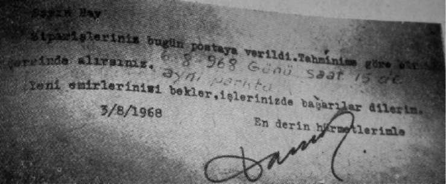
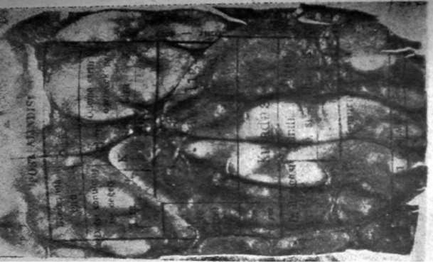
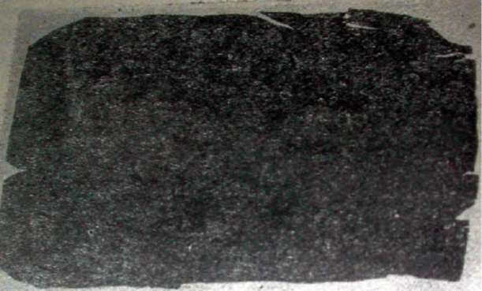
BÖLÜM
HIRSIZLIK SUÇUNDA OLAY YERİNİN İNCELENMESİ ve SORUŞTURMA EVRESİ
Yanık belge
Aynı belgenin infrared ışını altındaki hali Fulaj İzi
Yazılan herhangi bir yazının yazıldığı kağıdın altında bulunan belgede bıraktığı izlere fulaj izi denilmektedir.
Belgenin normal hali ile ultraviole ışığı altında ki görünümleri 43
SUÇUNDA OLAY YERİNİN İNCELENMESİ VE SORUŞTURMA EVRESİ
Lifler
Giysileri oluşturan iplere ait küçük parçacıklara lif denir. Bir çok olayda faillerin giysilerine ait lifler olay yerinde kalmaktadır.
Liflerin Tespiti,
Lifler; olayla alakalı kişilerin, giysilerinde, vücutlarında, ilişkili oldukları yer ve araçlarda bulunabilir.
Olay yerlerinin giriş ve çıkış noktaları, balkon veya cam kenarlarında bulunabilir.
Araçların karışmış oldukları olaylarda mağdura/maktule ait lif parçaları aracın üzerinde kalabilir.
Cam veya Cam Kırıkları
Olay türlerine göre olay yerlerinde değişik türde cam delilleri bulunabilmektedir.
Bir yangın olayında islenmiş cam delilleri yangının kundaklama olup olmadığını verebildiği gibi, ızrar yada silahla kurşunlama olayında olayın oluş tarzı hakkında bilgi verebilmektedir.
Suçta Kullanılan Diğer Araç ve Gereçler
Bir suçun işlenmesende kullanılan her türlü araç ve gereç bu kapsamda değerlendirilebilir.
Paralar ve kalpazanlık malzemeleri
Tornavida, keser, levye, keski, matkap, vb.
Yazım araçları ve makineler
Bu tür malzemeler oldukları gibi alınarak kendi muhafaza kutularında vaye ebatlarına uygun kutularda paketlenir.
2.6. İZ DELİLLER
Başlıca İz Deliller
Parmak İzi ve Avuç İzleri
Ayak İzi
Araç Lastik İzi
Diş İzi
Alet İzi
Kulak İzi
Olay yerlerinde, zorlamalardan, temaslardan ve İnsan vücudunda bulunan bazı organların izleriyle karşılaşılmaktadır. İnsan bedenindeki parmak, avuç, ayak, diş gibi organların bıraktığı kimlik tespitine yarayabilecek bu izlere bireysel tanımlayıcı izler denir.


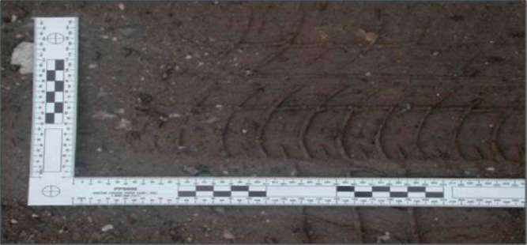
BÖLÜM
HIRSIZLIK SUÇUNDA OLAY YERİNİN İNCELENMESİ ve SORUŞTURMA EVRESİ
1. Parmak İzleri Ve Avuç İzleri
Parmak izi: Parmakların birinci boğumu ile tırnak ucu arasında kalan şekiller ve bu şekillerin yüzeylere teması sonucu yüzeyler üzerinde oluşturdukları izlere “parmak izi” denir. Parmak izleri olay yerlerinde elle temas edilen tüm yüzeyler ve nesneler üzerinde bulunur. Ancak bu yüzeylerden transfer edilebilmesi için bazı yöntemler gerekmektedir.
Avuç İzleri: Avuç izleride parmak izlerinin kalabileceği yerlerde aranmalıdır ve parmak izi gibi belirlenerek transfer edilir.
Ayak İzi: Olay yeri geniş alanlardan oluşabilmektedir. Ayak izleri özellikle olay yerinin giriş ve çıkış noktalarında bulunabilir. Ayak izleri, iyi muhafaza edilmiş
olay yerlerinde araştırılmalıdır.Ayak izleri bulundukları yüzeye göre, iki veya üç boyutlu olmalarına, bir kimyasal madde ile kirlenme durumuna göre değişik şekillerde tespit edilebilir ve alınabilir. Olay yerlerinin özelliğine göre (açık yada kapalı alan) ayak izleri; ayakkabılı, çoraplı veya çıplak olarak bulunabilir.
Araç Lastik İzleri
Araçların kullanıldığı olaylarda olay yerlerinde özellikle buraya geliş ve gidiş
yolları üzerinde incelenmesi gereken izlerdir.
Diş İzleri
Ülkemiz koşullarında Kriminal Polis Laboratuarlarında kişinin kimlik tespitinde esas olarak parmak izleri ve DNA testleri kullanılmakla birlikte eğer diş
hekimliği açısından o kişinin diş ve protez kayıtları mevcut ise bu verilerden de kimlik tespitinde faydalanılmaktadır.
Odontolojistlere göre, kişilerin diş dizisi, dişlerin sayıları, açılanmaları ve çenelerinin kapanış ilişkileri parmak izi kadar kişiye özgündür. İki ağız dental yapısı hiçbir zaman tam olarak birbirine uymaz. Bu nedenle de kişileri dişle-rinden tespit etmek mümkündür.
Özellikle tecavüz ve öldürme olaylarında, failin mağdur/maktül vücudu üzerinde, elma, peynir, sakız, çikolata gibi gıdalar üzerinde bulunur. Bu izlere ısırma izleri adı verilir.
SUÇUNDA OLAY YERİNİN İNCELENMESİ VE SORUŞTURMA EVRESİ
Alet İzleri
İnsanların kullandığı aletlerin zaman içerisinde aşınma, sürtünme ve yıpranma neticesinde üzerlerinde benzer aletlerde görülemeyecek özellikleri olur. Bu tür şekiller imalat sırasında da gerçekleşebilir. Olay yerinde bulunabilecek iz delillerden birisi de suç aletlerinin temas ettiği, baskı yaptığı zeminlerde kalan izleridir. Aletlerin bu tür özelliklerinden faydalanılarak olay yerlerinde bulunan alet izleri olayı aydınlatmaya ve suç aletini tespit etmeye yarayabilir..
Suçun işlenmesi sırasında kullanılan balta, çekiç, eğe, törpü, keski, tornavida ve benzeri aletler kendilerinden daha yumuşak maddelerle temas ettiklerinde bu maddeler üzerinde bazı izler bırakır. Örneğin; bir balta ile kesilen ağaç o baltanın kesici ağzında bulunan izleri taşır.
Olay yerinde pencere, kapı, masa çekmecesi, dolap ve benzeri yerlerdeki alet izleri bu izi bırakan alete has (özgü) izlerdir. Aynı tür başka bir alet aynı yerde, aynı izi bırakmaz. Alet izleri, kalıp alma ve fotoğraflama sureti ile veya nesnenin kendisinin doğrudan alınması ile transfer edilir.
Kulak İzi
Olay yerlerinde kalabilecek diğer bir izde kulak izleridir. Kulak izleri genellikle bir suç işleme düşüncesi ile kapalı bir yeri dinlemek amacıyla kapı veya pencere gibi yerleri dinlemek amacıyla kulaklarını bu tür yerlere dayamaları sonucu kalır.
Bu tür izlerde kişilere özgü özellikler taşıdığından olay yerlerinde aranması gereken izlerdendir. Bu izler kapı, pencere gibi yerlerde aranmalıdır.


BÖLÜM
HIRSIZLIK SUÇUNDA OLAY YERİNİN İNCELENMESİ ve SORUŞTURMA EVRESİ
2.7. OLAY YERİ GÜVENLİĞİ
İşlenen bir suç sonrasında delillerin araştırılması ve suçun aydınlatılması amacıyla yapılacak olan olay yeri inceleme çalışmalarının başarıya ulaşmasında ilk koşul olay yerinde gerekli güvenlik önlemlerinin alınmasıdır. Gerektiği gibi korunmamış bir olay yerinde yapılacak olan çalışmalar amacına ulaşmayacağı gibi soruşturmanın seyrini olumsuz yönde de etkileyebilir.
Olay yeri güvenliği çok geniş bir kavramdır. Burada ele alınacak öncelikli konu delillerin güvenliği ve personelin kişisel güvenliğidir.
2.7.1. Olay Yerinin Fiziki Güvenliği
Olay yerinin korunmasında karşılaşılan sorunlar ne olursa olsun orijinal hali bozulmuş ve maddi suç delilleri kaybolmuş bir olay yerini tekrar eski haline dönüştürmek imkansızdır.
Olay yerinin incelemesinin gerçekleşebilmesi için öncelikle olay yeri sınırlarının iyi tespit edilerek korunmasının sağlanması gerekmektedir. Olay yeri sadece suçun işlendiği yerle sınırlı olarak düşünülmemelidir. Olay yeri suçun işlendiği, faile, mağdura, suça ait nesnelerin bulunabileceği, suçun işlendiği yerin yanında, bu yerin çevresini ve şüphelilerinin kaçış yerlerini içine alan geniş bir alanı kapsar.
Olay yerlerinin korunmasından tüm polis birimleri sorumludur. Olay yerine genellikle ilk ekip olarak en yakın polis ekibi intikal eder. Bu ekip; polis merkezinde çalışan personelden, soruşturmacı birim görevlilerine, trafik görevlilerinden önleyici hizmet görevlilerine kadar çok çeşitli birimlerde çalışan polis ekipleri olabilir.
Olay yerine ilk gelen polis ekibini çok önemli görevler beklemektedir. Burada olay henüz yeni işlenmiş yada işlenmeye devam etmektedir. Suç faili olay yerinde veya kaçmaktadır yada çevredeki insanlar tarafından yakalanmıştır.
Olayın görgü tanıkları olay yerindedir. Bunlar olayın nasıl işlendiğini bilmektedir. Suç faili kaçmış ise eşkaline ilişkin tüm bilgiler bütün canlılığı ile hafızalarda beklemektedir. Aynı şekilde suç faillerinin nereden, ne ile geldikleri ellerinde ne tip silahların bulunduğu, suç işledikten sonra hangi tarafa ne ile kaçtıkları, yine suç yerinde bulunanlar tarafından bilinmektedir.
Yaralılar henüz olay yerinde veya hastaneye yeni götürülmekte ya da götürülmeyi beklemektedir. Suç delillerinin tamamı bozulmamış, kaybolmamış ve olay yerindedir.
Sıralanan bu önemli hususlar suçun aydınlanması açısından çok önemlidir. Bu sebeple olay yerine ilk giden ekibin büyük sorumlulukları bulunur.
Burada görevin bilinçli ve usülüne uygun yapılması ya da yapılmaması soruşturmanın sonucunu olumlu veya olumsuz etkileyeceği bir gerçektir. Ayrıca olay yeri yeterli şekilde korunamaz ise deliller kaybolabilir, bozulabilir veya değiş-tirilebilir.
SUÇUNDA OLAY YERİNİN İNCELENMESİ VE SORUŞTURMA EVRESİ
Olay yeri güvenliğini etkileyen birçok faktör bulunmaktadır. Olay yeri incelemesinde sıkça karşılaşılan bu faktörler ; Hava şartları
Mağdur, maktül yada yakınları
Şüpheli ve işbirlikçiler
Basın mensupları
Meraklı kalabalık ve ilgisiz kişiler
Fırsatçılar
Görevli olmayan personel
Uzman hataları
Hava Şartları:
Açık alanda yağmur, rüzgar, güneş, kar vb. hava şartları, olay yerinin güvenliğini olumsuz yönde etkileyebilir.
Mağdur, Maktül Yada Yakınları
Olay yerinde bulunan mağdur, maktül yada yakınlarının, olayın şoku ve psikolojik etkisiyle olay yerine girmesi ve olay yerinin orijinal halini bozması, delillere zarar vermesi mümkündür.
Şüpheli ve İşbirlikçiler
Olayı gerçekleştiren kişiler veya işbirlikçileri olay yeri yakınında olabilir. Bu şahıslar, olay yerine girerek delilleri kasıtlı olarak bozabilir yada yok edebilir.
Basın Mensupları
Olay ile ilgili kamuoyunu aydınlatmak ve bilgilendirmek amacıyla olay yerinde bulunan basın mensupları personelin ve uzmanların görev yapmasını engelleyebilmektedir. Daha fazla bilgi, belge, ses ve görüntü almak amacıyla olay yerine girerek delillerin zarar görmesine sebep olabilir.
Meraklı Kalabalık ve İlgisiz Kişiler
Meydana gelen adli olay çevrede yankı uyandırmakta ve kişilerin ilgisini çekmektedir.Amaçsız olan bu topluluk kontrolsüz hareket ederek olay yerinin bütünlüğünü bozabilirler.
Fırsatçılar: İşlenen suçlarda olay yerindeki panik ve karmaşadan yararlanmak isteyen fırsatçılar olay yerinden maddi değere sahip eşyaları hırsızlık maksadı ile olay yerine girebilirler.
Görevli Olmayan Personel
Olay yerinin incelenmesi ve soruşturulması ile görevli olmayan diğer personel de olay yerine girerek delillerin bozulmasına veya kaybolmasına sebebiyet verebilirler.

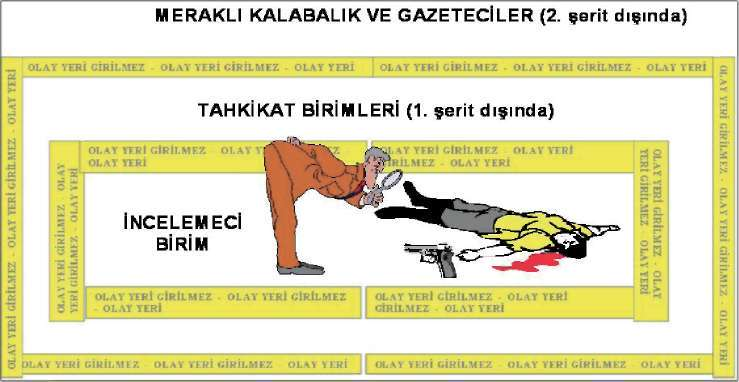
BÖLÜM
HIRSIZLIK SUÇUNDA OLAY YERİNİN İNCELENMESİ ve SORUŞTURMA EVRESİ
Olay yerine gelen ilk ekip, yukarıda belirtilen olay yeri güvenliğini etkileyen faktörleri göz önünde bulundurarak olay yerinin fiziki güvenliğini sağlamak zorundadır.
a. İLK EKİP
Olay yerine ilk giden ve müdahale eden ekiptir. İlk ekibin başlıca görevleri; Olayı haber aldığında veya bir olayla karşılaştığında eğer olay devam ediyorsa olaya müdahale eder.
Olayla ilgili yaralı şahıslar varsa olay yerinde bulunabilecek mevcut delilleri göz önünde bulundurarak ilk müdahaleyi yaparak en yakın sağlık kuruluşuna sevkini sağlar.
Olay yerini “en geniş hatlarıyla” güvenlik altına alarak delillerin kaybolmasını, bozulmasını ve değiştirilmesini engeller (Emniyet şeridi çeker). Olay yerine giriş yetkisi olmayan hiç kimsenin girmesine izin verilmez.
Olay yeri hizmetleri yerine getirilirken çift şerit çekmek suretiyle olay yeri güvenlik altına alınmalıdır. Birinci şerit olayın olduğu merkezin çevresine çekilir. İkinci şerit, birinci şerite paralel ve en az 5 metre mesafe ile çevrilmesi gerekir.
Birinci şerit içerisine olayın niteliğine göre inceleme yapacak görevli uzman personel dışında kimse alınmaz.
Birinci şerit ile ikinci şerit arasında soruşturmayı yürüten personel ve güvenlikten sorumlu personel yer alır.
İkinci şerit dışında basın mensupları, diğer kişiler ve görevliler bulunur.
İki şerit arasında olay merkezine giriş koridoru oluşturulur. Koridorun dış
girişinde olay yerinin güvenliğinden sorumlu bir görevli, olay yeri güvenliği kaldırılana kadar, olay yerine giren tüm personelin giriş çıkış zamanlarını ve girme amaçlarını gösterir bir form tanzim ederek bu formun soruşturma dosyasına eklenmesini sağlar.
SUÇUNDA OLAY YERİNİN İNCELENMESİ VE SORUŞTURMA EVRESİ
Olayın mahiyetine göre gerekiyorsa itfaiye, ambulans, kurtarma aracı vs.
gibi araçlar talep eder.
Olay hakkında bilgi alarak varsa kaçan şahısların eşkal bilgileri ve kaçış
noktalarını tespit ederek çevre araştırmasının yapılabilmesi için ilgili birime (Haber merkezi) haber verir.
Olayı incelemekle görevli tüm birimlere haber verilmesini sağlamak amacıyla ilgili birimi bilgilendirir. (Savcı, soruşturma ekibi, olay yeri inceleme ekibi vs.) Olay yerinde varsa sanıkları tespit ederek yakalar yoksa görgü tanıklarını tespit eder ve faillerin eşkal bilgisini alır. Ayrıca görgü tanıklarını soruşturma sorumlusu veya ekibi tarafından ifadelerin alınabilmesi için bekletir.
Ta n ık, fail ve şüpheli şahıslarla ilgi çalışmalar yaparak tespit edilen şahısların birbirleriyle görüşmeleri ve konuşmalarını engelleyerek tümünü soruşturma ekibine teslim eder.
Olayı soruşturmakla ve incelemekle görevli ekiplerin gelmesi beklenir. Bu ekiplere ilk gelinen andan itibaren gelişen hadiseler hakkında bilgi verilir.
Olay yerinden sevk edilen yaralıların bulundukları yer ve sağlık durumları hakkında ilgili birime bilgi verir.
Meydana gelen olay trafik akışını engelliyorsa mevcut delillerin güvenliği alındıktan sonra kısa sürede yolun trafiğe açılmasını sağlanır.
b. Olay Yerinin Korunma Aşamaları
Olayın geçtiği (suçun işlendiği) alanın korunması; Olayın merkezi olması nedeniyle bu alanın korunması birinci derecede yapılmalı, ancak burası korunurken diğer yerler ihmal edilmemelidir. Suçla ilgili iz ve delillerin yoğun olarak bulunabileceği bu alan genelde sınırlı ve dar bir yapıya sahiptir. Bu nedenle usulüne uygun korunma tedbirlerinin alınmaması durumunda iz ve delillerin zarar görme riski de artmaktadır.
Olay yerinin yakın çevresinin korunması; Kapalı alanlarda, olayın fiilen işlendiği yer ile bağlantısı olan, bitişik apartman dairesi, koridor, yangın merdiveni, giriş kapısı, bahçe ve kapısı gibi yerleri kapsamaktadır. Açık alanlarda ise suçun işlendiği yerin yakın çevresini kapsar. Bu gibi yerler genelde failin/faillerin suç yerine girmesi ve çıkması için engel teşkil eden yerlerdir. Bu alanda da suçla ilgili maddi delillerin yoğun olarak bulunma ihtimali çok yüksektir. Bu nedenle bu tür alanlardaki maddi delillerin zarar görmemesi için şerit çekmek suretiyle gerekli koruma tedbirleri alınmalıdır.
Olay yerinin geniş çevresinin korunması
Olay yerinin geniş çevresi suç yerlerine göre çok değişiklikler gösterir. Bu alanı tespit etmek ve korumak alan genişledikçe daha da zorlaşmaktadır. Bu-50


BÖLÜM
HIRSIZLIK SUÇUNDA OLAY YERİNİN İNCELENMESİ ve SORUŞTURMA EVRESİ
ralardaki iz ve delillerin tespit edilebilmesi için daha sistemli koruma ve inceleme yöntemlerinin uygulanması gereklidir. Suç yerine girilirken ve çıkılırken, buralara suça ait izler bırakılmış, deliller atılmış, veya saklanmış olabilece-ğinden dolayı olay yerinin geniş çevresinde de suçla ilgili önemli iz ve delilleri tespit etmemiz mümkündür. Bu alanlar genelde açık ve geniş bir yapıya sahip olduklarından dolayı koruma tedbirlerinin yeterli personel ve araç gereç kullanılarak yapılması gerekmektedir.
Olay Yerinin Korunma Süresi
Olay yerinde her türlü cisim, madde ve alan tespit edilip incelemenin sonuna kadar korunmalıdır.
Olayın türüne, ortamdaki cisim, madde ve alanın genişlik ve karmaşıklığı-na, yapılacak olan incelemenin türüne göre uygulanacak olan koruma tedbirleri ilgili uzman personel tarafından tespit edilerek uygulamaya konur.
Bazen olay yerinin tamamı (araba vb.) veya bir parçası tekrar incelenmek üzere bulunduğu yerden taşınması gerekir. Bu durumlarda bunun gerçekleşmesi aşamalarında da mutlaka olay yeri korunur.
Bazı olay yerlerinin hemen incelenmesi mümkün olmadığı durumlarda, inceleme uzmanı gelinceye kadar korunması sağlanır.
Olay yerinde soruşturmacı ve incelemeci birimler çalışmalarını bitirdikten sonra sorumlu Cumhuriyet Savcısının görüşü doğrultusunda koruma tedbirlerinin devam edip etmeyeceği belirlenir.
2.7.2. Olay Yerinde Personelin Güvenliği
Olay yerlerinin karmaşıklığı, şüphelilerin kullanmış olduğu eşyalar ile müşteki yada mağdurların durumları, yapılacak çalışma açısından titizlik gerektirmektedir. Özellikle biyolojik deliller yapıları itibariyle hepatit B yada AİDS hastalığına yol açan HİV gibi tehlikeli ve ölüme neden olabilecek virüsler içerebilirler.
Solunum Yolu
Bir olay yerinde hava ile bulaşan zararlı maddeler, toz, aerosol, duman, buhar ve gaz formunda olabilir. Bu zararlı maddeler türüne bağlı olarak solunum sırasında tahriş yada harabiyet meydana getirebilir.
Deri Teması
Deri teması lokal yada sistematik sağlık problemleri yaratabilecek sıklıkla rastlanılan bir etlilenme yoludur. Lokal etkiler temasın olduğu bölgedeki dokuda hasar yada tahrişe neden olur.
Sindirim Yolu
Sindirim yolu ile zararlı maddelere maruz kalma en nadir rastlanılan yoldur. Aşındırıcı bir maddenin sindirimi ağız, yemek borusu ve sindirim yoluna zarar verir.
SUÇUNDA OLAY YERİNİN İNCELENMESİ VE SORUŞTURMA EVRESİ
Olay yerlerinde soruşturma ve araştırma yapacak personelin, kişisel güvenlik tedbirlerini alarak çalışma yapması risk oranını azaltacaktır. Yapılan çalışmalarda kişisel güvenlik tedbirlerini almak her personel açısından zorunludur.
Olay Yerinde İnceleme ve Araştırma Yapılırken Bireysel Güvenlik Açısından Dikkat Edilmesi Gereken Hususlar Gerekli eğitimi ve ekipmanı olmayan kimse olay yerine girmemeli, delillere dokunmamalıdır.
Sınırlandırılan olay yerindeki personel; gaz, elektriksel tehdit ve patlayıcılar gibi zararlı maddelere maruz kalabileceği göz önünde bulundurularak olay yerinin güvenliği tam olarak sağlanmadan inceleme ve araştırma işlemine başlamamalıdır.
Olay yerinin fiziki durumları da göz önünde bulundurularak (açık alan incelemelerinde binalardan düşebilecek, kopabilecek parçalara karşı) gerekli önlemler alınmadan inceleme ve araştırmaya başlanılmamalıdır.
Potansiyel olarak enfeksiyon taşıyan maddelerle çalışırken tek kullanımlık eldivenler, koruyucu kıyafetler ve galoş kullanılmalıdır. Özellikle açık yara ve çatlak olduğu durumlarda çift eldiven kullanımına özen gösterilmelidir. Hasara uğrayan eldivenler anında değiştirilmeli ve aynı eldivenler tekrar kullanılmamalıdır.
Enfeksiyonlu maddelerin sıçraması ve bazı kimyasalların olumsuz etkisinden sakınmak için göz ve yüze koruyucular giyilmelidir. Bu önlem kuru kan örnekleri ile çalışırken de önemlidir.
Vücut sıvıları ve diğer potansiyel enfeksiyonlu maddeler ile çalışılırken herhangi bir şey yemek ve içmekten, sigara kullanımından kaçınılmalıdır.
İnceleme işlemi bittikten sonra eldiven yada diğer koruyucu ekipmanlar çıkartılır ve eller yıkanır. Bu donanımlar çıkarılırken dış yüzeyine çıplak elle dokunulmamasına dikkat edilerek, olay yerinde bırakılmadan özel poşetlere konularak imha edilmesi sağlanır.
Olay yeri incelemesinde mümkün ise tek kullanımlık malzeme tercih edilmeli, mümkün olmadığı durumlarda kullanılan malzeme tekrar kullanılmadan önce mutlaka bakterilere karşı temizlenmelidir.
Araştırma yöntemlerinden uygun olanın seçimi, olayın türü, özellikleri, hava şartları, personel durumu vb. hususlara bağlı olarak tamamen olay yeri inceleyen uzman ekibe aittir. Olay yerinde hangi yöntem uygulanırsa uygulansın araştırmanın temel amacı olayla ilişkili maddi delilleri bulmaktır.
Araştırmanın sistematik olarak yapılmasının yanında bulunacak delillerin mahkeme açısından güvenilir olmasına da dikkat edilmeli, delilleri hukuki yönden geçersiz kılabilecek hal ve hareketlerden kaçınılmalıdır.


BÖLÜM
HIRSIZLIK SUÇUNDA OLAY YERİNİN İNCELENMESİ ve SORUŞTURMA EVRESİ
Delil Araştırmasında Dikkat Edilecek Yerler ve Aranacak Deliller Merdivenler, geçitler, giriş yeri, cadde ile bitişik yerler ve yakın çevre: Kan damlaları, parmaklıklarda parmak izleri, suçlunun bıraktığı ya da attığı nesneler, aydınlatmalar, varsa asansör, çöp kovanları, Dış kapılar: Kilit, sürgü demiri, giriş için zorlama izleri, kapı zilinin çalışıp çalışmadığı,
Pencereler: Kilidi, kilitleme pozisyonu, kırık giriş izleri, giriş için muhtemel görüntüler, perdenin durumu, güneşlik ve pencere dışında görülen işaretler, Posta kutusu, gazete, mektup ve dokümanlar, tarihler, içerideki gazete, posta, siparişler vb., tarih işaretleri mektupların açılıp açılmadığı, okunup okunmadığı, süt şişelerinin sayısı,
İç kapılar: Sürgü ve kilitleri, anahtarın hangi yönde olduğu, Hol, Giriş: Elbise ve nesnelerin varlığı, dış giyecekler, şapka, şemsiye. Başlık, atkı, eldiven, çizmeler vb.
Işıklar: Olay yerinde hangi ışıkların açık olduğu, elektrik saati ve numarası, Isıtma koşulları: Ateş,soba vb. olup olmadığı, yanma durumu, küllerin incelenmesi vb.
Pişirme koşulları: Ocak ve fırın üzerinde bulunanlar, ısıtmak ve pişirmek için bir şey olup olmadığı,
Kokular: Gaz, barut, ağır sigara, tütün kokusu, alkol, parfüm kokusu vb.
Saatler: Saatlerin çalışıp çalışmadığı, doğru zamanı göstermesi, durması, çalar saatin kurulduğu saat,
Logo işaretleri: Üzerindeki etiketler, bardak ve değişik kaplar, karıştırılmış
nesneler,
Kül tablası ve içindekiler: tütün kalıntıları, sigara izmaritleri, sigara markaları, yanmış kibritler, sigara izmaritleri, kaç kişilik olduğu, bulaşık durumu, Çekmeceler masa ve diğer bölmeler: Kapalı, kilitli, anahtarın hangi çekmece de olduğu, çekmecelerin çekilmiş hali, acele arama belirtileri, bozuk para, banka, çek ve defteri vb.
Çöp sepeti: Buruşmuş kağıtlar, traş kapları, yırtılmış mektuplar, ve fail tarafından atılmış nesneler, banyo, tuvalet, şüpheli nesneler ve kullanılan kağıtlar, Hasarlı tavan, duvar ve diğer mobilyalar: bunların suçla ilişkisi, alçı işaretleri ya da lekeleri,
Çıkarılmış elbiseler: Elbiselerin yerleri, şekli, ters yüz olmuş kısımları, düzgün şekilde asılı bulunup bulunmadığı, Genel düzensizlik: Tipik şiddet ve mücadele olup olmadığı, evin temizlenme durumu,oda içinde masa ve sehpalardaki nesnelerin durumu Duvarlar: Duvar ve kapıların yeni boyanıp boyanmadığı, silinti ve kazıntıların olup olmadığı, 53
SUÇUNDA OLAY YERİNİN İNCELENMESİ VE SORUŞTURMA EVRESİ
Saklama yerleri: Silah vb. nesnelerin saklanabileceği yerler, yüksek mobilyalar ve bunların araları, duvar, kitap arkaları, yatak çarşafları, ısınma malzemelerinin arkası, yüksek raflar, mutfak dolapları, İnceleme ve İzler
Hırsızın takip ettiği yol ve giriş yeri tayin edilmelidir.
Parmak izi, ayak izi, alet izi, varsa alarm tertibatı üze rinde ve çevresinde suçlunun bıraktığı nesneler aranmalıdır,
Kapı, kilitler, pencereler, varsa alarm tertibatı incelen melidir.
Hırsızların temas ettikleri noktaları gizlemek gayreti içinde olduklarını unutmamak gerekir. Bazı matkap deliklerini kapamak için boya renginde macun kullanabilirler.
Şayet kilitle oynandığından şüphe edilirse bir uzmana incelettirilmesi gerekebilir.
Unutmamak gerekir ki, kilitler iyi kalite ve emniyetli ise ler hırsızlar mutlaka kapı ile yahut pencere ile oynayacaklardır.
Çok bilinen bir yöntem kilit çevresindeki tahta aksamda matkapla delikler açmak ve ovma testeresi ile belirli kesimi kese rek çıkarmaktır. Matkap İzleri seçilebilir. Oyma testeresi de tanı nabilir izler bırakabilir.
(h) Kapı veya kilitlere dokunulmamış olması halinde dahi menteşe ve menteşe vidalarına mutlaka bakmalısınız.
(i) Bilhassa gayrı meskûn alanlarda, aynı çevrede birden zi yade hırsızlık olması halinde aynı hırsızın işi olduğunu düşünmek ve sak landığı yeri tayin bakımından olayları bir harita üzerinde işaret leyerek izlemek faydalı olur.
(k) Unutmamak gerekir ki, hırsızın giyecek eşyalarında alet lerinde suç yerine has bazı yağ veya tozlar bulunabilir. İleride gerekli kontrollerin yapılabilmesi için gereğinde numuneler alınması faydalı olur.
Olay Yerinin Fiziki Güvenliği ve Delilleri Karartmanın Hukuki Boyutu Olay yerlerinde delillerin toplanması kadar diğer önemli bir konuda olay yerinin, ilk giden ekip tarafından fiziki güvenliğinin alınmasıdır. Bu konuda hukuki düzenlemelerde önemle üzerinde durulan bir konudur. Hatta olay yerinin fiziki güvenliğini alma sırasında sorun çıkartanlara karşı zor kullnma yetkisi tanınmıştır. Bu konu ile ilgili olarak;
CMK Madde 168: (Olay yerinde alınan tedbirlere riayet etmeyenler) “…Olay yerinde görevine ait işlemlere başlayan adlî kolluk görevlisi, bunların yapılmasına engel olan veya yetkisi içinde aldığı tedbirlere aykırı davranan kişileri, işlemler sonuçlanıncaya kadar ve gerektiğinde zor kullanarak bundan men eder…” şeklinde hüküm bulunmaktadır.
Olay yerine giden ilk ekibi olay yerinde neler yapacağı ile ilgili olarak; Emniyet Teşkilatı Parmak izi Hizmetleri Yönetmeliği 54


BÖLÜM
HIRSIZLIK SUÇUNDA OLAY YERİNİN İNCELENMESİ ve SORUŞTURMA EVRESİ
Madde 34: (Suç yerlerin Korunması ve Yetkili Birime Bilgi Verilmesi) “Suç sayılan olaylarda suç yerine ilk giden zabıta görevlileri, suç yerindeki her türlü eşyayı, suç araç ve eserlerini ve her çeşit iz ve delilleri bulundukları yerde, oldukları gibi korumakla ve suç yerinin ve delillerin tespit ve incelenmesi için olaydan en çabuk yol ve ilgili birimlere bilgi vermekle yükümlüdür.
Yetkili görevlilerin yapacakları inceleme ve araştırma sonuna kadar suç yerindeki herhangi bir şeye dokunulmaz ve başkalarının dokunmasına meydan verilmez.
Suç yerini inceleyecek yetkili ve görevli elemanların suç yerine gelmelerinden önce buradaki eşyaya herhangi bir sebep ve zorunlulukla dokunulmuş
olması halinde bunun kim tarafından yapılmış olduğunun, bu elemanlara bildirilmesi şarttır. ”
Polisin olay yerinde almış olduğu güvenlik tedbirlerine rağmen olay yerine girerek olay yerindeki delilleri bozan, değiştiren veya yok olmasına neden olan Emniyet Görevlilerine MESLEKTEN ÇIKARMA cezası getirilmiştir.
Emniyet Örgütü Disiplin Tüzüğü Madde 8/10: (meslekten çıkarma) “…Suç kanıtlarını yok etmek veya bilerek ve isteyerek yok olmasına neden olmak ya da saklamak, saklanmasına yardımcı olmak yahut değiştirmek,…”
Madde 36: (Suç Yerinde Parmak İzlerinin Nakli) Suç yerinin incelenmesinde, suçlu veya suçluların kimliğinin ortaya çıkarılmasına yarayacak parmak izlerinin tespit edilmesi halinde, bunlardan zamanla kaybolma veya bozulma ihtimali olanların öncelikle fotoğrafları çekilir. Folye üzerine de nakilleri yapılarak, bu folyeler, karşılaştırma yapılmak, şüpheli kişilerle veya arşivdeki izlerle ilişkileri araştırılmak üzere Teknik büro’ya getirilir.
2.8. OLAY YERİNDE YAPILAN ÇALIŞMALAR
Olay yerinde suç ile fail ilişkisini kurmak için en önemli unsur delildir. Delil, suçu veya masumiyeti tespit etmek üzere mahkeme sunulabilen her türlü şeydir. Dava boyunca, her türlü delil kabul edilebilir; şayet itiraz edilirse, delilin kabul veya red edilmesine hâkim karar verir. Delil kabul kuralı, üç standardı veya uygunluk testini içermektedir: Delil; yeterli, alakalı ve kabul edilebilir materyal olmalıdır. Bu sebeple hırsızlık soruşturmasında olay yeri ve olay yerinde elde edilecek deliller çok önemlidir. Delillendirme için ekiplerin davranışları suç soruşturmasının seyrini etkileyebileceğinden olay yerine intikal eden ekipler aşağıdaki husulara dikkat etmelidir.
2.8.1. Soruşturmacı Ekibin Yapacağı İş ve İşlemler 1. Olay yerine girilirken galoş giyilmesine ve yapılan incelemelerde eldiven, bone kullanılmasına özen gösterilir.
2. Şüpheliye ulaşmayı sağlayacak bilgilerin toplanmasında gerekli hassasiyet gösterilir.
SUÇUNDA OLAY YERİNİN İNCELENMESİ VE SORUŞTURMA EVRESİ
3. Varsa kamera görüntüsünün temini sağlanır, özel güvenlik görevlilerinden bilgi alınır.
4. Mağdur ve tanıklar tespit edilir.
5. Mağdur ve tanıklardan bilgi alınırken bu kişilerin psikolojisi göz önünde bulundurulur.
6. Olay yerinde olayla ilgili yorum yapılmamasına özen gösterilir.
7. Olay yerinden ayrılan şüpheli kişi ve araçların yakalanmasını sağlamak amacıyla ilgili birimlerle koordineye geçilmeli, koordine birimine bilgilerin açık, net ve anlaşılır şekilde verilmesine dikkat edilmelidir.
8. Deliller dikkatli bir şekilde tespit edilmeli ve kayda alınmalıdır.
9. Soruşturmacı olarak mutlaka bir not defteri taşınmalı, olaylara ilişkin düzenli notlar alınmalıdır. Bunlar olay yerine giriş şekli, olay gerçekleştirilen malzemeler, yöntemler, olay saati, şüphelilere ait eşkal bilgileri, şüpheli araç bilgileri, tanıklar, çalınan malzemenin teferruatlı bir listesi ile tarifleri, tip, model, ebat, renk, varsa özel işaretler vs. özelliği, elekronik eşyalarda, IMEI ve seri numarası vb. gibi tanımlayıcı bilgiler ve alınan notlar tutanaklara eksiksiz olarak yazılmalıdır.
10. Dikkati farklı bir yöne çekerek esas suçu saklamak, hiçbir zaman sahibi olmadıkları malı çalınmış gibi göstermek, sattığı veya bilerek elden çıkardığı malı çalınmış gibi çeşitli nedenlerle bazı olaylara hırsızlık süsü verilmek iste nebilir. Soruşturmacı bu konulara dikkat etmelidir. Bütün bu nedenlerle hırsızlık olaylarını incelerken soruşturmacı çalıntı malın çalma olayından önce gerçekten kişinin tasar rufunda olup olmadığını tespit etmesi gerekir. Bilhassa sigortalı mallar üzerinde bu oyunların çok sık oynanması muhtemeldir.
Örneğin: Olaya hırsızlık süsü verilmek istenen hallerde cam ters istikametten kırılabilir soruşturmada bu konuya dikkat edilmelidir.
11- Mağdurun suçtan ne ölçüde etkilendiğinin tespit edilmesi; soruşturma stratejisinin tespiti açısından gereklidir. Bazı durumlarda da mağdurlar şüphelilerden çekindikleri için konuşmamakta, yada yanlış bilgiler aktarabilmektedirler. Mağdurun beyanının doğruluğu araştırılmalıdır.
12- Çalıntı eşyaların cinsi soruşturmacıya suçlunun hangi kategoride ara-nabilegi yolunda fikir verir.
13- Suç yerinde olup da çalınmayan değerli eşyalar var mı, varsa nelerdir tespit olunur. Şayet çalınan malzelelerin bulunduğu yerde değerli eşyaların bir kısmı hırsız tarafından bırakılmışsa olayı gerçekleştiren kişi yada kişilerin ev halkı yada yakınlarından olacağı gerçeğinden hareketle bu yönde çalışma yapmak yerinde olacaktır. Normal şartlarda bir hırsız en yüksek fayda ile hırsızlık olayını gerçekleştirir.
14- Çalınan eşyalar şüpheliler tarafından kullanılabileceği göz ardı edilmemelidir.


BÖLÜM
HIRSIZLIK SUÇUNDA OLAY YERİNİN İNCELENMESİ ve SORUŞTURMA EVRESİ
15- Soruşturmacı genellikle hangi tip kilitlerin kullanıldığı ve bunların çalışma mekanizmalarını bilmeli ve kilitleri açmak için kullanılan aletleri bilip tanımalıdır.
16- Hem mağdurun öne sürdüğü, hem de şüphelilerin adlarını verdiği tanıklar olabilir. Bu tanıkların doğru söylemenin yanında, yasal sorumluluklarına rağmen yalancı tanıklık yapmaları durumu da söz konusu olabilir. Şüphelilerin sorgusunda tanıkların beyanları ve tanıklık yapma şekilleri çok önemlidir. Yalancı tanıklar öne süren ve bu konuda yalancı tanıklık için bazı kişiler temin edebilmiş olan şüphelilerden itiraf alınmasının zorlaşacağı değerlendirilmelidir.
17- Teknik benzerlik, mekansal ilişki ve zamansal yakınlık yönüyle yakın çevrede meydana gelen olayların araştırılması. Olay yerine yakın bölgede aynı zaman dilimi içerisinde aynı stilde başkaca hırsızlık olaylarının gerçeşip gerçektirilmediği araştırılması delil bulma konusunda faydalı olacaktır.
18- Çalıntı eşyanın ağır olmasından ve yakalanma tehlikesinden dolayı şüpheliler tarafından olay yerine yakın muhtelif yerlere bırakma, saklama veya düşürülme ihtimali göz ardı edilmeyip değerlendirilmesi gerekmektedir. Bu nedenle olay yeri ve çevresinin dikakli bir şekilde taranması suç unsurlarının bulunması açısından önemlidir.
2.8.2. Atölye Çalışması
Olay yerinde yapılacak çalışmalırda elde edilecek (plaka, eşkal, tanık, teşhis, kamera görüntüsü, isim, lakap vb.) bulguları mevcut arşiv ve kayıtlardan, pol-net projelerinden araştırılması aşamasıdır.
2.8.3. Arşiv Çalışması (Benzer Olay Ve Suç İşleyenlerin Tespiti) Hırsızlar tercih ettikleri suç işleme yöntemlerini kolay kolay değiştirmedik-leri gerçeğinden hareketle büro kayıtlarında düzenli olarak tutulan fail-suç sitili istatistikleri üzerinde çalışma yapılmasıdır.
2.8.4. Suçlu Profilinin Tespiti
Olayın oluş şekli ve zamanı göz önüne alınarak muhtemel şüphelilerin yaş
grupları, cinsiyeti, memleketlerinin tespiti yönünde yapılan çalışmalardır.
2.8.5. Fotoğraf Teşhisi
Olay mahalline intikal eden ilk ekip ve soruşturma ekibinin yapmış olduğu çalışmalarda tesbit edilen tanıklara büro amirliğinde bulunan sabıkalı şahıslara ait fotoğraf albümü gösterilerek şüpheli tesbit edilmeye çalışılır.
2.8.6. Çevre İllerle Koordine Ve Araştırma İşlenen suçun il bünyesinde ve ülke genelinde ender rastlanan suçlar veya suç tekniklerinden olması durumunda çevre illerde benzer suçların meydana 57
SUÇUNDA OLAY YERİNİN İNCELENMESİ VE SORUŞTURMA EVRESİ
gelip gelmediği, tespit edilen şüphelilerin olup olmadığı benzer olaylarla mukayese edilir. Çevre yada güzergahta bulunan iller meydana gelen olayla ilgili bilgilendirilerek, benzer yöntemle meydana gelmiş olay varsa olay ve şüphelileri hakkında bilgi alış verişinde bulunulur.
2.8.7. Pol-Net Projelerinin Kullanılması
Tespit edilen şüpheli hakkında Pol-net üzerinden ortak kullanıma sunulan SAM, Asayiş Polisi Ajandası, MERNİS, GBT, Araç Tescil Sorgulama, Kimlik Bildirme vb. gibi projeler kullanılarak elde edilen veriler doğrultusunda bilgi toplanarak degerlendirilmesidir.
2.8.8. Cezaevi Araştırılması
Muhtemel şüpheli sayısını azaltmak amacıyla UYAP projesinden faydalanılarak tespit edilen şüphelilerin cezaevinde olup olmadığı araştırılır.
2.8.9. Saha-Sokak Çalışması
Suç mahalline giden ekiplerin konuyla ilgili derledikleri bilgiler ve atölye çalışmasında elde edilen bulguların bu tür suçları işleyen sabıkalıların bulunduğu yerlerde yapılan çalışmalar sonucunda suç örğütleri ile irtibatı olan eski sabıkalılarla yapılan görüşmelerde elde edilen bilgilerin analiz edilerek değer-lendirilmesidir.
2.8.10. Muhbir – Eleman Temini Ve Kullanılması Hırsızlık suçu işleyen şüpheliler genel yapı itibariyle para karşılığında suç ortağını rahatlıkla ihbar edebilmektedir. Bu konuda dikkat edilmesi gereken muhbirin polisi farklı şekilde yönlendirmesi ve çift taraflı çalışmasını engelleyici tedbirler alınmalıdır.
2.8.11. Çalıntı Mal Araştırılması (Çalıntı Eşya Alıp-Satan Yerlerin Kontrolu) Hırsızlık şüphelileri çaldıkları eşyaları genellikle ikinci el eşya satan yerlerde elden çıkarabilmek için eşyanın değerinden daha düşük bedelle satmaktadırlar. Hırsızlık malı satan alan şahıslar bu eşyaları kendi işyerinlerine koymayıp başkalarına ait depolarda muhafaza ederler. Bu çalıntı eşyaları müşterisi çıktığında gizledikleri yerlerden çıkarmaktadırlar. Bu nedenle çalıntı eşyanın bulunabilmesi amacıyla çalıntı eşya alıp satan işyerleri ve işyeri sahipleri dikkatli bir şekilde takip tarassut altında tutulmalıdır. Çalıntı eşyaların nerelerde satıldığı veya satılabileceği hakkında bilgi sahibi olmak polis için çok önemlidir.
2.8.12. Delillendirme(Suç-Fail İlişkisi)
Suç mahalli,atölye çalışması,saha-sokak çalışması neticesi elde ettiğimiz veriler ışığında belirlenen muhtemel şüphelilerin olay yerinden elde edilen iz ve delilleri,tanık beyanları,şüpheli-olayyeri-mağdur arasında ilişki kurabilecek bulgular ile eşleştirilmesidir.


BÖLÜM
HIRSIZLIK SUÇUNDA OLAY YERİNİN İNCELENMESİ ve SORUŞTURMA EVRESİ
2.8.13. Fiziki Takip
Mahkemelerden gerekli izinler alınarak şüpheli takip altına alınır. Şüphelinin hareketleri tarassut altına alınarak kamera, fotoğraf makinası ve ses kayıt cihazları yardımıyla suç örğütü üyelerinin bağlantıları tespit edilip suç örğütünün faaliyetleri deşifre edilir. Suç örğütü üyelerinin fiziki takip vasıtasıyla çalmış oldukları eşyaları satmış oldukları yerler tespit edilir.
2.8.14. HTS Analizi
Mahkemelerden yasal izinlerin alınması ile şüphelilere ait telefonların Te-lekominikasyon İletişim Başkanlığından (TİB) alınan, arayan, aranan, aradı-ğı süre, abone bilgi kütük bilgileri ve görüşme esnasında bulunduğu bölgeyi gösteren telefon dökümüdür. Alınan bu telefon dökümünün incelenmesi ile şüphelilerin suç işlerken kimlerle irtibatlı olduğu, suç bölgesinde bulunup bulunmadığı, olaydan sonra gittiği yerlerin tespiti mümkündür.
2.8.15. Tahkikat
Hırsızlık suçunun soruşturulmasında aşağıda belirtilen hususlara dikkat edilmelidir;
1. Hırsızlık eyleminin faillerinin sayılarının tespiti ve kimliklerinin belirlenmesine çalışılmalıdır. (Sahte kimlik veya yalan beyanda bulunma) 2. Olayın meydana geldiği yer ve bu yerin özellikleri belirlenmeli, krokilen-dirilmeli, çit, duvar gibi sağlamlığı temin edecek unsurların var olup olmadığı belirtilmelidir.
3. Olayın gece mi gündüz mü gerçekleştiği ve mümkün olduğunca olayın meydana geldiği saat tespit edilmeye çalışılmalıdır.
4. Ta n ıkların belirlenmesine çalışılmalıdır. Ta n ık araştırması sadece olayın meydana geldiği binada değil, dar çevreden geniş çevreye doğru gittik
çe genişleyen bir alanda yapılmalıdır.
Örneğin, ikametten hırsızlık olayında, aynı binada oturan ikamet sakinlerinden başlayarak, çevre binalara, olay yerini çevreleyen sitelere, olay yerine açılan sokaklara ve olay yerinin bulunduğu mahalleyi çevreleyen geniş bir alana doğru araştırma yapılmalıdır. Şüphelilerin olayı gerçekleştirmeden önce diğer bina ve dairelerde de hırsızlığa teşebbüs olayını gerçekleştirmiş veya diğer vatandaşlar tarafından olay yerine gelirken yada giderken görülmüş olabileceği ihtimalleri değerlendirilmelidir.
5. Hırsızlığın duvar, kapı, pencere, demir parmaklık, kasa ve sandık gibi şeylerin yıkılması, devrilmesi, kırılması, delinmesi, kullanılmaz hale getirilmesi suretiyle işlenip işlenmediğinin, anahtar, taklit anahtar veya kilit açmaya yarayan diğer aletlerin kullanılıp kullanılmadığının belirlenmesine çalışılmalıdır.
6. Müşteki tespit edilmeli ve müracaatı alınmalıdır.
SUÇUNDA OLAY YERİNİN İNCELENMESİ VE SORUŞTURMA EVRESİ
7. Çalınan eşya veya enerjinin değeri tespit edilmeye çalışılmalıdır.
8. Çalınan eşya bulunduğunda değeri tekrar tespit edilmeli, hasar görme gibi nedenlerden dolayı değerinde azalma olup olmadığı belirlenmelidir.
9. Çalınan altın ve mücevher gibi eşyaların bulunmasında ve sahibine iadesinde oluşabilecek fiyat farkı göz önünde bulundurulmalı, bu husustaki beyanlar arasında ihtilaf söz konusu ise konunun hukuki mahkemelerde çözümlenmesine yarayacak deliller tespit edilmeye çalışılmalıdır.
10. Çalıntı eşyanın bulunuş ve ele geçiriliş şekli soruşturma evrakında belirtilmelidir. Rızanın varlığının veya yokluğunun belirtilmesi kovuşturma safhasında önem arz etmektedir.
1 1 . Hırsızlık olayının meydana geldiği yerde veya yakın çevresinde her hangi bir kamera görüntüsü bulunmuşsa elde edilen görüntü olayın çözümüne yarar sağlayabilecek durumda ise CD çözüm tutanağı yapılmalıdır.
12. Başarılı bir hırsızlık soruşturmasının temel faktörlerinden birinin şüphelilerin çalışma, metot ve tekniklerinin tespit edilmesi olduğu unutulmamalıdır. Yapılan tespitler, olaylar ve şüpheliler arasında bağlantı kurularak doğru hedefe ulaşmada soruşturma birimine yardımcı olacaktır.
13. Soruşturma birimindeki görevliler, muhtemel şüpheliler ile empati kurmalı, bunun neticesinde senaryolar üreterek üretilen senaryoları de
ğerlendirmelidir.
A- Faili Meçhul
1. Olay yeri inceleme birimlerinin tespit ettiği deliller, kamera kayıtları, fotoğraflar ve krokiler tasnif edilir ve değerlendirmeye tabi tutulur.
2. Çalınan eşyalar belirlenir ve satılabileceği yerler tespit edilir.
3. Suçun işleniş yöntemine göre arşiv araştırması yapılır.
4. Pol-net üzerinden çevre illerde meydana gelen benzer olaylar incelenir.
5. Suçta kullanılan taşıt, araç ve gereçlerle ilgili araştırma yapılır.
6. Müşteki ve mağdur ifadeleri alınır.
7. Ta n ıktan bilgi alınır ve tanığa fotoğraf teşhisi yaptırılır. Tanıktan alınan bilgilerle şüphelinin robot resmi çizdirilir.
8. Eşkâli belirlenen şüphelinin fotoğrafları diğer birimlere dağıtılır.
9. İstihbari çalışmalara ağırlık verilerek muhbirlerle iletişime geçilir.
10. Sosyal çevresi itibariyle “iş, kalacak yer ve beraber olduğu kişiler bakımından” suç işleme potansiyeli olan kişilere yönelik araştırma yapılır (bekâr evi, pansiyon, otel vb. kayıtlarındaki hareketliliğin incelenmesi).
1 1 . Cezaevi listeleri takip edilir.
12. Emniyet dışı kurumların bilgi sistemlerinden istifade edilir (UYAP, MERNİS, internet, Elektrik, su, telefon vs).


BÖLÜM
HIRSIZLIK SUÇUNDA OLAY YERİNİN İNCELENMESİ ve SORUŞTURMA EVRESİ
13. Diğer kolluk birimleriyle koordine sağlanır.
14. Umuma açık istirahat ve eğlence yerleri ve esnaflarla iletişime geçilir.
15. Çalıntı eşyaların fotoğrafları veya elle çi zili şekilleri temin edilir.
16. Çalıntı eşyaların varsa seri numaraları tespit edilir.
17. Olay yerinde olaydan daha önce her hangi bir hırsızlık olayına karışmış
kimseler bulunup bulunmadığı araştırılır.
18. Olay yerinde veya civarında durumu şüpheli bir araç görülüp görülmediği araştırılır.
19. Suçun işleniş tekniği hakkında bilgi içermek ve çalıntı eşyaları bildirmek kaydıyla bütün teşkilâta bil gi verilir.
20. Aynı teknikle işlenmiş bulunan başka suç lar bulunup bulunmadığı araştırılır.
21. Suç yerinde veya çevresinde dikkat çeken bir durumun bulunup bulunmadığı araştırılır.
22. Çalıntı eşyanın satıldığı tespit edilen yerlerde arama kararı alınarak ge rekli aramalar yapılır. Elde edilen suç unsuru malzemeler el koyma-arama tutanağı tanzim edilerek muhafaza altına alınır. Çalıntı eşyaların bu mahallerde bulunma sı halinde satan şahıs veya şahısların eşkâli ve mümkünse kimlikleri tespit edilir.
B-Faili Belli Ve Yakalanmışsa
1. Olay yeri inceleme birimlerinin tespit ettiği deliller, kamera kayıtları, fotoğraflar ve krokiler tasnif edilir ve değerlendirmeye tabi tutulur, 2. Gerekli izinler alınarak arama ve el koyma işlemleri gerçekleştirilir, 3. Müşteki, mağdur ve şüphelinin ifadeleri alınır, 4. Ta n ıklardan bilgi alınır,
5. Teşhis işlemi gerçekleştirilir, 6. Adres tespitleri yapılır,
7. Soruşturma dosyasında bulunması gereken tutanaklar tamamlanır.
Soruşturma Dosyasında Bulunması Gereken Tutanaklar C. Savcı görüşme ve talimat tutanağı, müracaat, yakalama, üst arama, el koyma veya muhafaza altına alma, teslim tesellüm, değer tespit, şahıs teşhis, eşya teşhis, arama kararı, yakınlarına haber verme, doktor raporları, avukat ve müdafii talep, şüpheli ve sanık hakları formu, gözaltı takip formu, uzlaşma (uzlaşma gerektiren suçlarda), sanık karar takip formu, dizi pusulası soruşturma dosyasında bulunması gereken tutanaklardandır.
SUÇUNDA OLAY YERİNİN İNCELENMESİ VE SORUŞTURMA EVRESİ
Şüphelinin İfadesinin Alınmasında Dikkat Edilmesi Gereken Hususlar Ya p ılan inceleme bizi belli bir şüpheli veya şüphelilere götürmüş ise bunların ifadelerinin alınması gerekir. İfade alınırken şu bilgiler derlenmeye çalışılmalıdır: (1) Şüphelinin ifadesi alınmadan önce olay ile ilgili tüm iz, delil, bulgu ve bilgilerin tespit edilmesi, mağdur ve tanıkların ifadelerinin alınması önem arz etmektedir.
(2) Şüpheli ve suç ortakları yakalanma anından itibaren ifade aşamasına kadar kesinlikle bir araya getirilmemeli iletişimleri engellenmeli, aynı nezarethanede tutulmamalı ve böylece ağız birliği yapmaları engenlen-melidir.
(3) İfade alacak görevli önceden konuyla ilgili hazırlık yaparak soracağı soruları belirlemelidir.
(4) İfade almaya, dosyada suç delili olabilecek şahısların ifadesinden baş-lanılmalıdır. (görgü tanığı, samimi ikrarda bulunan şüpheli vb) (5) Olay ile ilgili şüphelinin gösterdiği şahitlerin ayrı ayrı ifadelerinin alınarak, bu ifadelerdeki çelişkiler ortaya konulup şüpheliye sorular yöneltilmelidir.
(6) Şüphelinin daha evvel herhangi bir hırsızlık suçu işleyip işlemediği, bir olaya karışıp karışmadığı araştırılmalıdır.
(7) Şüphelinin mağdurla bir ilişkisi veya irtibatı olup olmadığı (geçmişte-halen) araştırılmalıdır.
(8) Şüphelinin suçun işlendiği yere kolayca girip çıkma imkânının olup olmadığı araştırılmalıdır.
(9) Suçun işlendiği yerde şüphelinin akraba, arka daş veya tanıdıklarının olup olmadığı araştırılmalıdır.
(10) Şüphelinin suçu işleyebilecek bir başka kimse ile veya kimselerle arkadaşlığı olup olmadığı araştırılmalıdır.
(11) Şüpheli normal geliri ile orantılı bir yaşam içinde olup olmadığı.
Bir hırsızlık olayı ile karşı karşıya kalan soruşturmacının, şartları iyice tetkik ettikten sonra kendi kendine sorup cevap araya cağı bazı önemli sualler vardır.
Bunlar meselenin çözümü için hem soruşturmacıya inceleme yol ve usulünü kontrol imkânı vere cek hem de soruşturmacıya ışık tutacaktır.
Bunlara kısaca göz atalım:
(a) Neler çalınmıştır-çalınan şey nedir-iddia olunan şeyler gerçekten çalınmış mıdır -bir yerde mi unutulmuştur- baş ka bir yere konmuş olabilir mi-çalıntı eşyanın vasıfları nedir-tam tarifleri ve cinsleri.
(b) Olay ne zaman olmuştur-çalınan eşyaların en son görül me zamanı ile hırsızlığın ne zaman farkına varıldığı-eşyaların hemen satışa arzı ihtimaline karşı tedbirler.
(c) Kim yapabilir-şüphelilerin eşkâl tarifleri elimizde mi?


BÖLÜM
HIRSIZLIK SUÇUNDA OLAY YERİNİN İNCELENMESİ ve SORUŞTURMA EVRESİ
(d) Suçun motifi nedir-profesyonel işimi-intikam için mi vs.
(e) Çalıntı eşyanın yerini hırsız nereden bilmiş veya nasıl bulmuş.
(f) Hırsızlık için en uygun anın suçu işlediği an olduğunu nasıl kestirmiş.
(g) Çalıntı eşyayı nasıl elden çıkaracak, çalıntı eşya alan yerler, rehin işleri yapanlar, işporta satış, kendisimi kullana caktır vs.
(h) Başvurulan usul veya uygulanan metot amatör işi mi? Unutulmamalı ki amatörler profesyonellerden daha fazla hasar verir. Hırsızın ustalığı işinden belli olur. Hangi sanattan anlarsa o aksama fazla önem verir. Örnek; marangozluktan anlıyorsa ahşap aksama fazla önem verecektir.
(i) Suç kaç kişiyle işlenmiştir? İzlerin tetkiki ile suçlu sayısını tespite gayret edilmeli, belli operasyonlardaki metotlarla fikir sahibi olmaya çalışılmalıdır. Örnek olarak ağır eşyaların kaldırılması, mefruşatın ikiye ayrılarak yerlerinin değiştirilmesi gösterilebilir.
a) Müşteki İfadesi
Müşteki ifadesi alınırken olay yerinin saat kaçta açılıp kapatıldığı, çalınan eşyaların teferruatlı bir listesi ile tarifleri, tip, model, ebat, renk, varsa özel işaretler vs. özelliği, elekronik eşyalarda, IMEI ve seri numarası vb. gibi tanımlayıcı bilgiler mutlaka yazılmalıdır.
b) Şüpheli İfadesi
Şüphelinin İfadesi alınırken ifadeyi alanın başarılı olabilmesi için şu hususlara dikkat etmesi gerekmektedir; a) İfade alma tamamen ifadeyi alanın kontrol ve hâkimiyeti altında yapılmalıdır.
b) İfade almaya başlama, kesme ve benzer konularda üstünlük daima ifadeyi alanda olmalıdır.
c) İfadeyi alan şüphelinin soru sormasına imkân vermemelidir.
d) İfadeyi alan daima ciddi olmalıdır.
e) İfadeyi alan aceleci ve telaşlı bir tutum içinde olmamalı, kendisinden emin ve sakin hareket etmelidir.
İfadeyi alan polisin konuşturmada gözetleyeceği genel kurallar şunlardır; a) Emniyet ve gizliliği sağlamalı,
b) Güven havası yaratarak rahatlığı temin etmeli, c) Öğüt vermekten çekinmeli,
d) Yalanı hemen şüphelinin yüzüne vurmamalı, e) Şüphelinin söylediklerine hayret etmemeli, f) Meseleye ne derecede önem verildiğini sorulacak sorularla ortaya koymalı, g) Umulmadık bir zamanda beklenilen cevabın alınması durumunda sevinç emaresi ve şaşkınlık göstermemeli, 63
SUÇUNDA OLAY YERİNİN İNCELENMESİ VE SORUŞTURMA EVRESİ
h) Bir yöntem veya taktik yürümeyince hemen ani bir şekilde diğerine geçmemeli, ı) İfade almayı, soru disiplinini zedelemeden mümkün olduğu kadar bir sohbet havası içinde yürütmeli,
j) Bazen doğrudan doğruya şüphelinin gözlerinin içine bakmalı ve bakışları asla kaçırmamalı,
k) Konuyu fazla dağıtmamalı,
l) Söylenenleri iyi dinlemeli, değerlendirmeli ve önemli ipuçlarını takip etmeli.
m) ifade alınırken şüphelinin vermiş olduğu cevaplara müdafinin müdahale etmesi halinde konu müdahale ifadeye yazılmalıdır.
İfadesi alınan şahısların ortaya koyduğu bazı davranışlar vardır ki, bunlar şahsın yalan söylediğinin, bir şeyler gizlediğinin birer işaretidir. İfadeyi alan personel aşağıda belirtilen değişikliklere dikkat etmelidir; Boyun damarı atışlarındaki artış,
Gırtlak kemiğinin artan hareketi,
Ağız kuruluğu,
Sık sık yutkunma,
Terleme,
Teneffüs artışı,
Yüz rengi değişimi, kızarma, solma, sararma, Huzursuzluk hali, rahatsızlık,
El ve bacaklarda titreme,
Ses titremesi, kısılması, tıkanıklık, kekeleme dil “sürçmesi, Göz bebeklerinde dikkati çeken değişmelerdir.
İfade alma işleminde hemen sonuç alınamayabilir. Konu nun kapsamı ve önemine göre günlerce sürecek ifade almalar olabilir. İfade almanın devamlı-lığı esas olmakla birlikte, elde edilen bilgilerin değerlendirilmesi, önemli ipuçlarının ele geçirilmesi veya alınan bilgilerin doğruluğunu tahkik gibi neden lerle ifade almaya ara verilmelidir. İfadeyi alan personelin ifadeye ara vermede dikkat etmesi gereken hususlar şunlardır: 1) İfade almaya ara verilmesini müteakip, şüpheli mutlaka tecrit edilmelidir.
2) İfadesi alınacak başka şahıslar varsa bunlarla göz göze gelmesine izin verilmemelidir.
3) İfade alınmasına devam edilecek şahıs yalnız olarak bulunacağı odada hareketleri gözetlenmeli ve değerlendirilmelidir.
4) İfade almaya ara verilinceye kadar şahıstan elde edilen bilgiler derhal değerlendirilmeli, yalan beyanlar gerçeklerden ayıklanmalı ve İfade al-64

BÖLÜM
HIRSIZLIK SUÇUNDA OLAY YERİNİN İNCELENMESİ ve SORUŞTURMA EVRESİ
maya müspet bilgilere dayandırılarak yapılacak hazırlıkla yeniden baş-lanmalıdır.
c) Tanık İfadesi
Hem mağdurun öne sürdüğü, hem de şüphelilerin adlarını verdiği tanıklar olabilir. Tanıklar meydana gelen olayla ilgili doğru söyleyecekleri gibi yasal sorumluluklarına rağmen yalancı tanıklık yapabilirler.
Şüphelilerin sorgusunda tanıkların beyanları ve tanıklık yapma şekilleri çok önemlidir. Yalancı tanıklar öne süren ve bu konuda yalancı tanıklık için bazı kişiler temin edebilmiş ise de yapılan araştırmalarla yalan beyanda bulunduklarını ispatlmak.
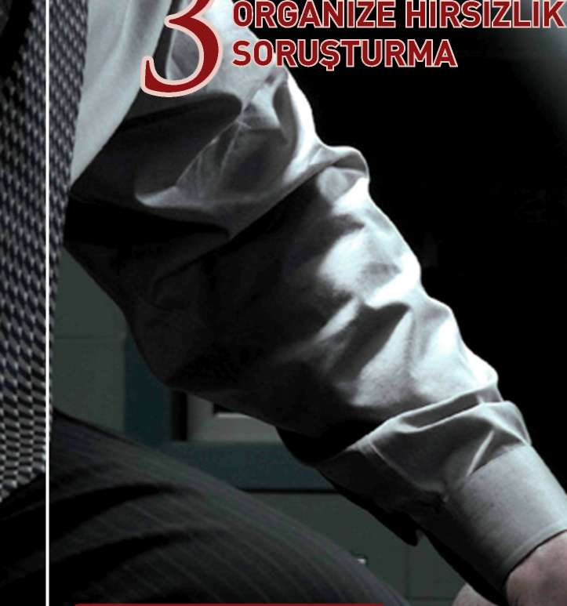
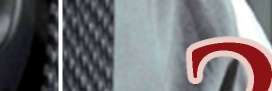
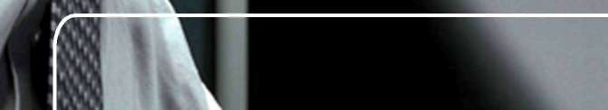
HIRSIZLIK SUÇLARINDA SORU Ş TURMA
Ç LARINDA